28 Math Attitudes with STEM Career Attainment (Dang, M., & Nylund-Gibson, K., 2017)
-
BY = Base Year (2002) - 10th grade
- Completed the baseline survey of high school sophomores in spring term 2002.
-
F1 = First follow up (2004) - 12th grade
- Most sample members were seniors, but some were dropouts or in other grades (early graduates or retained in an earlier grade).
F2 = Second follow up (2006) - Post-high-school follow-up
F3 = Third follow up (2012) - Kids are ~26yo
28.1 Item Descriptions
28.1.1 Base Year Covariates
English Proficiency BYS70A: How well student understands English (1 = Very well, 4 = Not at all) BYS70B: How well student speaks English (1 = Very well, 4 = Not at all) BYS70C: How well student reads English (1 = Very well, 4 = Not at all) BYS70D: How well 10th-grader writes English (1 = Very well, 4 = Not at all) BYTM12B: Student behind on schoolwork due to limited proficiency in English BYSTLANG: English if student’s native language
Demographics BYSEX: 1 = Male, 2 = Female BYRACE_R: All -5 since restricted BYSES2QU: SES Quartile
28.1.2 Base Year Indicators
BYS87A: When I do mathematics, I sometimes get totally absorbed BYS87C: Because doing mathematics is fun, I wouldn’t want to give it up BYS87F: Mathematics is important to me personally
BYS89A: I’m confident that I can do an excellent job on my math tests BYS89B: I’m certain I can understand the most difficult material presented in math texts BYS89L: I’m confident I can understand the most complex material presented by my math teacher BYS89R: I’m confident I can do an excellent job on my math assignments BYS89U: I’m certain I can master the skills being taught in my math class
Math Attitude BYS87 Items
Description: How much do you agree or disagree with the following statements?
Response options:
1 - Strongly agree
2 - Agree
3 - Disagree
4- Strongly disagree
Math Self-Efficacy BYS89/F1S18 Items
Description: How much do you agree or disagree with the following statements?
Response options:
1 - Almost never
2 - Sometimes
3 - Often
4- Almost always
28.1.3 F1 Indicators
F1S18A: I’m confident that I can do an excellent job on my math tests F1S18B: I’m certain I can understand the most difficult material presented in my math textbooks F1S18C: I’m confident I can understand the most complex material presented by my math teacher F1S18D: I’m confident I can do an excellent job on my math assignments F1S18E: I’m certain I can master the skills being taught in my math class
28.2 Read in data
Read in ELS .sav file:
View codebook:
#view_df(els_sav)Save subset:
els_subset <- els_sav %>%
clean_names() %>%
dplyr::select(
stu_id, strat_id, psu,
bys87a,bys87c,bys87f,bys89a,bys89b,bys89l,bys89r,bys89u,
f1s18a,f1s18b,f1s18c,f1s18d,f1s18e,
bys70a,bys70b,bys70c,bys70d,bystlang,bytm12b,bysex,byrace_r,
byses2qu,f3onet2curr,f3onet6curr, f3bystemoc30, f3bytscwt
) %>%
mutate(school = paste0(strat_id,psu))
view_df(els_subset)
#write_csv(els_subset, here("29-dang-lca-example", "els_data", "els_dang_analysis.csv"))Read in ELS data file, els_dang_analysis.csv.
bys87_items <- c("bys87a","bys87c","bys87f")
f1s18_items <- c("f1s18a","f1s18b","f1s18c","f1s18d","f1s18e")
bys89_items <- c("bys89a","bys89b","bys89l","bys89r","bys89u")
els_data <- read_csv(
here("29-dang-lca-example", "els_data", "els_dang_analysis.csv"),
na = c("-9", "-8", "-6", "-5", "-4", "-7", "-1", "-3", "-2", "-99")
) %>%
# Dichotomize English proficiency
mutate(across(
c(bys70a, bys70b, bys70c, bys70d),
~ case_when(. %in% c(1, 2) ~ 1,
. %in% c(3, 4) ~ 0,
TRUE ~ NA_real_)
)) %>%
mutate(across(
c(f3onet2curr),
~ case_when(is.na(.) ~ NA_real_,
. %in% c(11, 15, 17, 19, 25, 45, 51) ~ 1,
TRUE ~ 0)
)) %>%
mutate(female = case_match(bysex,
2 ~ 1,
1 ~ 0,
.default = NA_real_)) %>%
mutate(ses_dichotomized = case_match(
byses2qu,
1 ~ 1,
NA ~ NA,
.default = 0
)) %>%
mutate(across(
all_of(bys87_items),
~ case_when(. %in% c(1, 2) ~ 1,
. %in% c(3, 4) ~ 0,
TRUE ~ NA_real_)
)) %>%
mutate(across(all_of(c(
bys89_items, f1s18_items
)), ~ case_when(
. %in% c(1, 2) ~ 0,
. %in% c(3, 4) ~ 1,
TRUE ~ NA_real_
)))
summary(els_data)
#> stu_id strat_id psu
#> Min. :101101 Min. :101.0 Min. :1.000
#> 1st Qu.:190106 1st Qu.:190.0 1st Qu.:1.000
#> Median :281116 Median :281.0 Median :2.000
#> Mean :279543 Mean :279.4 Mean :1.557
#> 3rd Qu.:369205 3rd Qu.:369.0 3rd Qu.:2.000
#> Max. :461234 Max. :461.0 Max. :3.000
#>
#> bys87a bys87c bys87f
#> Min. :0.0000 Min. :0.0000 Min. :0.0000
#> 1st Qu.:0.0000 1st Qu.:0.0000 1st Qu.:0.0000
#> Median :1.0000 Median :0.0000 Median :1.0000
#> Mean :0.5181 Mean :0.3387 Mean :0.5108
#> 3rd Qu.:1.0000 3rd Qu.:1.0000 3rd Qu.:1.0000
#> Max. :1.0000 Max. :1.0000 Max. :1.0000
#> NA's :4457 NA's :4523 NA's :4439
#> bys89a bys89b bys89l
#> Min. :0.0000 Min. :0.0000 Min. :0.0000
#> 1st Qu.:0.0000 1st Qu.:0.0000 1st Qu.:0.0000
#> Median :0.0000 Median :0.0000 Median :0.0000
#> Mean :0.4436 Mean :0.3987 Mean :0.4482
#> 3rd Qu.:1.0000 3rd Qu.:1.0000 3rd Qu.:1.0000
#> Max. :1.0000 Max. :1.0000 Max. :1.0000
#> NA's :4806 NA's :4765 NA's :5150
#> bys89r bys89u f1s18a
#> Min. :0.0000 Min. :0.000 Min. :0.0000
#> 1st Qu.:0.0000 1st Qu.:0.000 1st Qu.:0.0000
#> Median :1.0000 Median :1.000 Median :0.0000
#> Mean :0.5168 Mean :0.534 Mean :0.4841
#> 3rd Qu.:1.0000 3rd Qu.:1.000 3rd Qu.:1.0000
#> Max. :1.0000 Max. :1.000 Max. :1.0000
#> NA's :5374 NA's :5536 NA's :5860
#> f1s18b f1s18c f1s18d
#> Min. :0.0000 Min. :0.0000 Min. :0.0000
#> 1st Qu.:0.0000 1st Qu.:0.0000 1st Qu.:0.0000
#> Median :0.0000 Median :0.0000 Median :1.0000
#> Mean :0.4093 Mean :0.4506 Mean :0.6541
#> 3rd Qu.:1.0000 3rd Qu.:1.0000 3rd Qu.:1.0000
#> Max. :1.0000 Max. :1.0000 Max. :1.0000
#> NA's :5883 NA's :5907 NA's :5913
#> f1s18e bys70a bys70b
#> Min. :0.0000 Min. :0.0000 Min. :0.0000
#> 1st Qu.:0.0000 1st Qu.:1.0000 1st Qu.:1.0000
#> Median :1.0000 Median :1.0000 Median :1.0000
#> Mean :0.5899 Mean :0.9522 Mean :0.9272
#> 3rd Qu.:1.0000 3rd Qu.:1.0000 3rd Qu.:1.0000
#> Max. :1.0000 Max. :1.0000 Max. :1.0000
#> NA's :5903 NA's :13916 NA's :13904
#> bys70c bys70d bystlang
#> Min. :0.0000 Min. :0.0000 Min. :0.0000
#> 1st Qu.:1.0000 1st Qu.:1.0000 1st Qu.:1.0000
#> Median :1.0000 Median :1.0000 Median :1.0000
#> Mean :0.9222 Mean :0.8954 Mean :0.8304
#> 3rd Qu.:1.0000 3rd Qu.:1.0000 3rd Qu.:1.0000
#> Max. :1.0000 Max. :1.0000 Max. :1.0000
#> NA's :13923 NA's :13913 NA's :953
#> bytm12b bysex byrace_r
#> Min. :0.0000 Min. :1.000 Mode:logical
#> 1st Qu.:0.0000 1st Qu.:1.000 NA's:16197
#> Median :0.0000 Median :2.000
#> Mean :0.0386 Mean :1.502
#> 3rd Qu.:0.0000 3rd Qu.:2.000
#> Max. :1.0000 Max. :2.000
#> NA's :11924 NA's :827
#> byses2qu f3onet2curr f3onet6curr
#> Min. :1.000 Min. :0.000 Mode:logical
#> 1st Qu.:2.000 1st Qu.:0.000 NA's:16197
#> Median :3.000 Median :0.000
#> Mean :2.574 Mean :0.271
#> 3rd Qu.:4.000 3rd Qu.:1.000
#> Max. :4.000 Max. :1.000
#> NA's :953 NA's :3401
#> f3bytscwt school female
#> Min. : 0.0 Min. :1011 Min. :0.0000
#> 1st Qu.: 0.0 1st Qu.:1901 1st Qu.:0.0000
#> Median : 150.7 Median :2811 Median :1.0000
#> Mean : 200.6 Mean :2795 Mean :0.5021
#> 3rd Qu.: 310.3 3rd Qu.:3692 3rd Qu.:1.0000
#> Max. :2163.2 Max. :4612 Max. :1.0000
#> NA's :827
#> ses_dichotomized
#> Min. :0.0000
#> 1st Qu.:0.0000
#> Median :0.0000
#> Mean :0.2362
#> 3rd Qu.:0.0000
#> Max. :1.0000
#> NA's :953
summary(factor(els_data$bys70a))
#> 0 1 NA's
#> 109 2172 13916
summary(factor(els_data$bys70b))
#> 0 1 NA's
#> 167 2126 13904
summary(factor(els_data$bys70c))
#> 0 1 NA's
#> 177 2097 13923
summary(factor(els_data$bys70d))
#> 0 1 NA's
#> 239 2045 13913
summary(factor(els_data$bystlang))
#> 0 1 NA's
#> 2586 12658 953
summary(factor(els_data$f3onet2curr))
#> 0 1 NA's
#> 9328 3468 3401
summary(factor(els_data$female))
#> 0 1 NA's
#> 7653 7717 827
summary(factor(els_data$bysex))
#> 1 2 NA's
#> 7653 7717 827
summary(factor(els_data$byses2qu))
#> 1 2 3 4 NA's
#> 3600 3590 3753 4301 953
summary(factor(els_data$ses_dichotomized))
#> 0 1 NA's
#> 11644 3600 95328.3 Descriptive Statistics
Linguistic Minority
“Respondents were classified as linguistic minority if they reported that English was not their first language and they responded that they read,speak, write, and/or understand English well. Respondents were classified as native English speakers if they indicated they speak English as a first language and they read, speak, write, and understand English well. Using these criteria, among the total 8,790 students, 7,490 (85.2%) were classified as native English speakers, 1,040 (11.8%) were classified as linguistic minority students, and 260 (3.0%) were classified as ELLs.” (page 8)
BYS70A: How well student understands English (1 = Very well, 4 = Not at all) but already dichotomized BYS70B: How well student speaks English (1 = Very well, 4 = Not at all) but already dichotomized BYS70C: How well student reads English (1 = Very well, 4 = Not at all) but already dichotomized BYS70D: How well 10th-grader writes English (1 = Very well, 4 = Not at all) but already dichotomized BYTM12B: Student behind on schoolwork due to limited proficiency in English
ling_min <- els_subset %>%
mutate(across(where(is.labelled), zap_labels)) %>%
replace_with_na_all(condition = ~.x %in% c(-9,-8,-6,-5,-4,-7,-1,-3,-2,-99)) %>%
select(bys70a,bys70b,bys70c,bys70d,bytm12b)
f <- All(ling_min) ~ Mean + SD + Min + Median + Max + Histogram
datasummary(f, els_subset, output="markdown")
summary(factor(ling_min$bys70a))
summary(factor(ling_min$bys70b))
summary(factor(ling_min$bys70c))
summary(factor(ling_min$bys70d))
summary(factor(ling_min$bytm12b))
# Trying to create the linguistic minority variable:
ling_minority_var <- els_data %>%
mutate(
lang_status = case_when(
# Condition A: Native English Speaker
# Native language is English AND proficient in all 4 domains
bystlang == 1 & bys70a == 1 & bys70b == 1 & bys70c == 1 & bys70d == 1
~ "Native English Speaker",
# Condition B: Linguistic Minority
# Not native English speaker, BUT reads, speaks, writes, and/or understands well
bystlang == 0 & (bys70a == 1 | bys70b == 1 | bys70c == 1 | bys70d == 1)
~ "Linguistic Minority",
# Condition C: ELL (English Language Learner)
# Not native English speaker AND has limited proficiency / behind in schoolwork
bystlang == 0 & (bytm12b == 1 | (bys70a != 1 & bys70b != 1 & bys70c != 1 & bys70d != 1))
~ "ELL",
# If data is missing for vital logic pieces, preserve it as NA
TRUE ~ NA_character_
),
# Convert to a factor for clean modeling/summaries later
lang_status = factor(lang_status, levels = c("Native English Speaker", "Linguistic Minority", "ELL"))
)
summary(factor(ling_minority_var$lang_status))
math_subset <- els_data %>%
select(bys87a,bys87c,bys87f,bys89a,bys89b,bys89l,bys89r,bys89u,f1s18a,f1s18b,f1s18c,f1s18d,f1s18e) Descriptive
f <- All(math_subset) ~ Mean + SD + Min + Median + Max + Histogram
datasummary(f, els_data, output="markdown")| Mean | SD | Min | Median | Max | Histogram | |
|---|---|---|---|---|---|---|
| bys87a | 0.52 | 0.50 | 0.00 | 1.00 | 1.00 | ▇▇ |
| bys87c | 0.34 | 0.47 | 0.00 | 0.00 | 1.00 | ▇▄ |
| bys87f | 0.51 | 0.50 | 0.00 | 1.00 | 1.00 | ▇▇ |
| bys89a | 0.44 | 0.50 | 0.00 | 0.00 | 1.00 | ▇▆ |
| bys89b | 0.40 | 0.49 | 0.00 | 0.00 | 1.00 | ▇▅ |
| bys89l | 0.45 | 0.50 | 0.00 | 0.00 | 1.00 | ▇▆ |
| bys89r | 0.52 | 0.50 | 0.00 | 1.00 | 1.00 | ▇▇ |
| bys89u | 0.53 | 0.50 | 0.00 | 1.00 | 1.00 | ▆▇ |
| f1s18a | 0.48 | 0.50 | 0.00 | 0.00 | 1.00 | ▇▇ |
| f1s18b | 0.41 | 0.49 | 0.00 | 0.00 | 1.00 | ▇▅ |
| f1s18c | 0.45 | 0.50 | 0.00 | 0.00 | 1.00 | ▇▆ |
| f1s18d | 0.65 | 0.48 | 0.00 | 1.00 | 1.00 | ▄▇ |
| f1s18e | 0.59 | 0.49 | 0.00 | 1.00 | 1.00 | ▅▇ |
Weighted average
bys87_items <- c("bys87a","bys87c","bys87f")
f1s18_items <- c("f1s18a","f1s18b","f1s18c","f1s18d","f1s18e")
bys89_items <- c("bys89a","bys89b","bys89l","bys89r","bys89u")
math_binary_weighted <- els_data %>%
summarise(across(c(all_of(bys87_items), all_of(c(bys89_items, f1s18_items))),
list(
w_mean = ~ weighted.mean(.x, f3bytscwt, na.rm = TRUE),
w_sd = ~ {
keep <- !is.na(.x) & !is.na(f3bytscwt)
x <- .x[keep]
w_raw <- f3bytscwt[keep]
w <- w_raw / sum(w_raw)
mu <- sum(w * x)
sqrt(sum(w * (x - mu)^2))
}
),
.names = "{.col}_{.fn}"
)) %>%
pivot_longer(
cols = everything(),
names_to = c("item", ".value"),
names_pattern = "(.*)_(w_mean|w_sd)"
)
math_binary_weighted
#> # A tibble: 13 × 3
#> item w_mean w_sd
#> <chr> <dbl> <dbl>
#> 1 bys87a 0.508 0.500
#> 2 bys87c 0.333 0.471
#> 3 bys87f 0.504 0.500
#> 4 bys89a 0.450 0.497
#> 5 bys89b 0.401 0.490
#> 6 bys89l 0.452 0.498
#> 7 bys89r 0.520 0.500
#> 8 bys89u 0.538 0.499
#> 9 f1s18a 0.483 0.500
#> 10 f1s18b 0.407 0.491
#> 11 f1s18c 0.452 0.498
#> 12 f1s18d 0.655 0.475
#> 13 f1s18e 0.589 0.492
library(tidyverse)
library(gt)
item_labels <- tibble(
item = c(
"bys87a", "bys87c", "bys87f",
"f1s18a", "f1s18b", "f1s18c", "f1s18d", "f1s18e",
"bys89a", "bys89b", "bys89l", "bys89r", "bys89u"
),
scale = c(
rep("Math attitudes", 3),
rep("Math self-efficacy", 5),
rep("Math experiences", 5)
),
item_label = c(
"I enjoy math",
"Math is one of my best subjects",
"Math is useful for my future",
"Certain I can understand math",
"Certain I can do well in math",
"Certain I can learn math",
"Certain I can master math skills",
"Certain I can complete math assignments",
"Took advanced math",
"Participated in math club",
"Worked hard in math",
"Talked with teacher about math",
"Planned to take more math"
)
)
math_binary_weighted_table <- math_binary_weighted %>%
left_join(item_labels, by = "item") %>%
mutate(
percent_endorsed = w_mean * 100,
sd = w_sd
) %>%
select(scale, item, item_label, percent_endorsed, sd)
math_binary_weighted_table %>%
gt(groupname_col = "scale") %>%
cols_label(
item = "Item",
item_label = "Item wording",
percent_endorsed = "% endorsed",
sd = "SD"
) %>%
fmt_number(
columns = c(percent_endorsed, sd),
decimals = 2
) %>%
tab_header(
title = "Weighted Descriptive Statistics for Binary Math Indicators",
subtitle = "Weighted means represent the percentage endorsing the focal response category"
) %>%
tab_options(
table.font.size = 13,
heading.title.font.size = 16,
heading.subtitle.font.size = 12,
row_group.font.weight = "bold",
column_labels.font.weight = "bold"
)| Weighted Descriptive Statistics for Binary Math Indicators | |||
| Weighted means represent the percentage endorsing the focal response category | |||
| Item | Item wording | % endorsed | SD |
|---|---|---|---|
| Math attitudes | |||
| bys87a | I enjoy math | 50.79 | 0.50 |
| bys87c | Math is one of my best subjects | 33.27 | 0.47 |
| bys87f | Math is useful for my future | 50.39 | 0.50 |
| Math experiences | |||
| bys89a | Took advanced math | 44.97 | 0.50 |
| bys89b | Participated in math club | 40.10 | 0.49 |
| bys89l | Worked hard in math | 45.20 | 0.50 |
| bys89r | Talked with teacher about math | 51.97 | 0.50 |
| bys89u | Planned to take more math | 53.76 | 0.50 |
| Math self-efficacy | |||
| f1s18a | Certain I can understand math | 48.28 | 0.50 |
| f1s18b | Certain I can do well in math | 40.74 | 0.49 |
| f1s18c | Certain I can learn math | 45.17 | 0.50 |
| f1s18d | Certain I can master math skills | 65.52 | 0.48 |
| f1s18e | Certain I can complete math assignments | 58.94 | 0.49 |
Proportions
# Dichotomize
math_binary <- els_data %>%
select(bys87_items,bys89_items,f1s18_items, f3bytscwt, f3onet2curr, bystlang, stu_id)
# Set up data to find proportions of binary indicators
ds <- math_binary %>%
select(-f3bytscwt, -bystlang, -stu_id, -f3onet2curr) %>%
pivot_longer(
cols = everything(),
names_to = "variable",
values_to = "value"
)
# Create table of variables and counts, then find proportions and round to 3 decimal places
prop_df <- ds %>%
count(variable, value) %>%
group_by(variable) %>%
mutate(prop = n / sum(n)) %>%
ungroup() %>%
mutate(prop = round(prop, 3))
# Make it a gt() table
prop_table <- prop_df %>%
gt(groupname_col = "variable", rowname_col = "value") %>%
tab_stubhead(label = md("*Values*")) %>%
tab_header(
md(
"Variable Proportions"
)
) %>%
cols_label(
variable = md("*Variable*"),
value = md("*Value*"),
n = md("*N*"),
prop = md("*Proportion*")
)
prop_table| Variable Proportions | ||
| Values | N | Proportion |
|---|---|---|
| bys87a | ||
| 0 | 5658 | 0.349 |
| 1 | 6082 | 0.376 |
| NA | 4457 | 0.275 |
| bys87c | ||
| 0 | 7720 | 0.477 |
| 1 | 3954 | 0.244 |
| NA | 4523 | 0.279 |
| bys87f | ||
| 0 | 5752 | 0.355 |
| 1 | 6006 | 0.371 |
| NA | 4439 | 0.274 |
| bys89a | ||
| 0 | 6338 | 0.391 |
| 1 | 5053 | 0.312 |
| NA | 4806 | 0.297 |
| bys89b | ||
| 0 | 6874 | 0.424 |
| 1 | 4558 | 0.281 |
| NA | 4765 | 0.294 |
| bys89l | ||
| 0 | 6096 | 0.376 |
| 1 | 4951 | 0.306 |
| NA | 5150 | 0.318 |
| bys89r | ||
| 0 | 5230 | 0.323 |
| 1 | 5593 | 0.345 |
| NA | 5374 | 0.332 |
| bys89u | ||
| 0 | 4968 | 0.307 |
| 1 | 5693 | 0.351 |
| NA | 5536 | 0.342 |
| f1s18a | ||
| 0 | 5333 | 0.329 |
| 1 | 5004 | 0.309 |
| NA | 5860 | 0.362 |
| f1s18b | ||
| 0 | 6092 | 0.376 |
| 1 | 4222 | 0.261 |
| NA | 5883 | 0.363 |
| f1s18c | ||
| 0 | 5653 | 0.349 |
| 1 | 4637 | 0.286 |
| NA | 5907 | 0.365 |
| f1s18d | ||
| 0 | 3557 | 0.220 |
| 1 | 6727 | 0.415 |
| NA | 5913 | 0.365 |
| f1s18e | ||
| 0 | 4222 | 0.261 |
| 1 | 6072 | 0.375 |
| NA | 5903 | 0.364 |
psych::describe(math_binary)
#> vars n mean sd median
#> bys87a 1 11740 0.52 0.50 1.00
#> bys87c 2 11674 0.34 0.47 0.00
#> bys87f 3 11758 0.51 0.50 1.00
#> bys89a 4 11391 0.44 0.50 0.00
#> bys89b 5 11432 0.40 0.49 0.00
#> bys89l 6 11047 0.45 0.50 0.00
#> bys89r 7 10823 0.52 0.50 1.00
#> bys89u 8 10661 0.53 0.50 1.00
#> f1s18a 9 10337 0.48 0.50 0.00
#> f1s18b 10 10314 0.41 0.49 0.00
#> f1s18c 11 10290 0.45 0.50 0.00
#> f1s18d 12 10284 0.65 0.48 1.00
#> f1s18e 13 10294 0.59 0.49 1.00
#> f3bytscwt 14 16197 200.58 212.77 150.69
#> f3onet2curr 15 12796 0.27 0.44 0.00
#> bystlang 16 15244 0.83 0.38 1.00
#> stu_id 17 16197 279542.70 104263.77 281116.00
#> trimmed mad min max range
#> bys87a 0.52 0.00 0 1.00 1.00
#> bys87c 0.30 0.00 0 1.00 1.00
#> bys87f 0.51 0.00 0 1.00 1.00
#> bys89a 0.43 0.00 0 1.00 1.00
#> bys89b 0.37 0.00 0 1.00 1.00
#> bys89l 0.44 0.00 0 1.00 1.00
#> bys89r 0.52 0.00 0 1.00 1.00
#> bys89u 0.54 0.00 0 1.00 1.00
#> f1s18a 0.48 0.00 0 1.00 1.00
#> f1s18b 0.39 0.00 0 1.00 1.00
#> f1s18c 0.44 0.00 0 1.00 1.00
#> f1s18d 0.69 0.00 0 1.00 1.00
#> f1s18e 0.61 0.00 0 1.00 1.00
#> f3bytscwt 167.57 223.42 0 2163.17 2163.17
#> f3onet2curr 0.21 0.00 0 1.00 1.00
#> bystlang 0.91 0.00 0 1.00 1.00
#> stu_id 279551.71 133070.76 101101 461234.00 360133.00
#> skew kurtosis se
#> bys87a -0.07 -1.99 0.00
#> bys87c 0.68 -1.54 0.00
#> bys87f -0.04 -2.00 0.00
#> bys89a 0.23 -1.95 0.00
#> bys89b 0.41 -1.83 0.00
#> bys89l 0.21 -1.96 0.00
#> bys89r -0.07 -2.00 0.00
#> bys89u -0.14 -1.98 0.00
#> f1s18a 0.06 -2.00 0.00
#> f1s18b 0.37 -1.86 0.00
#> f1s18c 0.20 -1.96 0.00
#> f1s18d -0.65 -1.58 0.00
#> f1s18e -0.37 -1.87 0.00
#> f3bytscwt 1.43 3.18 1.67
#> f3onet2curr 1.03 -0.94 0.00
#> bystlang -1.76 1.10 0.00
#> stu_id 0.00 -1.20 819.25
# Item labels
item_labels <- tibble(
variable = c(
"bys87a", "bys87c", "bys87f",
"bys89a", "bys89b", "bys89l", "bys89r", "bys89u",
"f1s18a", "f1s18b", "f1s18c", "f1s18d", "f1s18e"
),
scale = c(
rep("Math attitudes", 3),
rep("Math experiences", 5),
rep("Math self-efficacy", 5)
),
item_label = c(
"I enjoy math",
"Math is one of my best subjects",
"Math is useful for my future",
"Took advanced math",
"Participated in math club",
"Worked hard in math",
"Talked with teacher about math",
"Planned to take more math",
"Certain I can understand math",
"Certain I can do well in math",
"Certain I can learn math",
"Certain I can master math skills",
"Certain I can complete math assignments"
)
)
prop_table_data <- math_binary %>%
select(all_of(c(bys87_items, bys89_items, f1s18_items))) %>%
pivot_longer(
cols = everything(),
names_to = "variable",
values_to = "value"
) %>%
filter(!is.na(value)) %>%
count(variable, value, name = "n") %>%
group_by(variable) %>%
mutate(
total_n = sum(n),
prop = n / total_n
) %>%
ungroup() %>%
left_join(item_labels, by = "variable") %>%
mutate(
value_label = case_when(
value == 1 ~ "1 = endorsed",
value == 0 ~ "0 = not endorsed"
)
) %>%
select(scale, variable, item_label, value_label, n, total_n, prop)
prop_endorsed_table <- prop_table_data %>%
filter(value_label == "1 = endorsed") %>%
select(scale, variable, item_label, n, total_n, prop) %>%
gt(groupname_col = "scale") %>%
cols_label(
variable = "Item",
item_label = "Item wording",
n = "Endorsed N",
total_n = "Valid N",
prop = "% endorsed"
) %>%
fmt_percent(
columns = prop,
decimals = 1
) %>%
tab_header(
title = "Unweighted Endorsement Rates for Binary Math Indicators",
subtitle = "Endorsement refers to the response category recoded as 1"
) %>%
tab_options(
table.font.size = 13,
heading.title.font.size = 16,
heading.subtitle.font.size = 12,
row_group.font.weight = "bold",
column_labels.font.weight = "bold"
)
prop_endorsed_table| Unweighted Endorsement Rates for Binary Math Indicators | ||||
| Endorsement refers to the response category recoded as 1 | ||||
| Item | Item wording | Endorsed N | Valid N | % endorsed |
|---|---|---|---|---|
| Math attitudes | ||||
| bys87a | I enjoy math | 6082 | 11740 | 51.8% |
| bys87c | Math is one of my best subjects | 3954 | 11674 | 33.9% |
| bys87f | Math is useful for my future | 6006 | 11758 | 51.1% |
| Math experiences | ||||
| bys89a | Took advanced math | 5053 | 11391 | 44.4% |
| bys89b | Participated in math club | 4558 | 11432 | 39.9% |
| bys89l | Worked hard in math | 4951 | 11047 | 44.8% |
| bys89r | Talked with teacher about math | 5593 | 10823 | 51.7% |
| bys89u | Planned to take more math | 5693 | 10661 | 53.4% |
| Math self-efficacy | ||||
| f1s18a | Certain I can understand math | 5004 | 10337 | 48.4% |
| f1s18b | Certain I can do well in math | 4222 | 10314 | 40.9% |
| f1s18c | Certain I can learn math | 4637 | 10290 | 45.1% |
| f1s18d | Certain I can master math skills | 6727 | 10284 | 65.4% |
| f1s18e | Certain I can complete math assignments | 6072 | 10294 | 59.0% |
28.4 Math Attitudes & Self-Efficacy
28.4.1 Full Sample
Basic analysis
basic_t1 <- mplusObject(
TITLE = glue("Basic - T1"),
VARIABLE =
"categorical = bys87a,bys87c,bys87f,bys89a,
bys89b,bys89l,bys89r,bys89u;
usevar = bys87a,bys87c,bys87f,bys89a,
bys89b,bys89l,bys89r,bys89u;
WEIGHT = f3bytscwt;",
ANALYSIS =
"type = basic;",
OUTPUT = "sampstat;",
usevariables = colnames(math_binary),
rdata = math_binary)
basic_t1_fit <- mplusModeler(basic_t1,
dataout=here("basic.dat"),
modelout=here("basic.inp"),
check=TRUE, run = TRUE, hashfilename = FALSE)Enumeration
if (!dir.exists("enumeration")) {
dir.create("enumeration", recursive = TRUE)
}
t1_enum <- lapply(1:6, function(k) {
enum_t1 <- mplusObject(
TITLE = glue("Class {k} Math Attitudes & Efficacy - T1"),
VARIABLE = glue(
"categorical = bys87a,bys87c,bys87f,bys89a,
bys89b,bys89l,bys89r,bys89u;
usevar = bys87a,bys87c,bys87f,bys89a,
bys89b,bys89l,bys89r,bys89u;
WEIGHT = f3bytscwt;
classes = c({k});"),
ANALYSIS =
"estimator = mlr;
type = mixture;
starts = 500 100;
processors = 12;",
OUTPUT = "sampstat residual tech11 tech14;",
usevariables = colnames(math_binary),
rdata = math_binary)
enum_t1_fit <- mplusModeler(enum_t1,
dataout=here("enumeration","enum.dat"),
modelout=glue(here("enumeration","c{k}_math_weighted.inp")),
check=TRUE, run = TRUE, hashfilename = FALSE)
})Model Fit Summary
source(here("29-dang-lca-example","functions", "extract_mplus_info.R"))
source(here("29-dang-lca-example","functions","enum_table.R"))
# Define the directory where all of the .out files are located.
output_dir <- here("29-dang-lca-example","enumeration")
# Get all .out files
output_files <- list.files(output_dir, pattern = "\\.out$", full.names = TRUE)
# Process all .out files into one dataframe
final_data <- map_dfr(output_files, extract_mplus_info_extended)
# Extract Sample_Size from final_data
sample_size <- unique(final_data$Sample_Size)
output_enum <- readModels(here("29-dang-lca-example","enumeration"), quiet = TRUE)
enum_table_weights(output_enum)| Model Fit Summary Table1 | ||||||||||
| Classes | Par | LL | % Converged | % Replicated |
Model Fit Indices
|
LRTs
|
Smallest Class
|
|||
|---|---|---|---|---|---|---|---|---|---|---|
| BIC | aBIC | CAIC | AWE | VLMR | n (%) | |||||
| Class 1 Math Attitudes & Efficacy - T1 | 8 | −62,206.05 | 100% | 100% | 124,487.34 | 124,461.91 | 124,495.34 | 124,586.58 | – | 12146 (100%) |
| Class 2 Math Attitudes & Efficacy - T1 | 17 | −48,467.32 | 100% | 100% | 97,094.51 | 97,040.49 | 97,111.51 | 97,305.39 | <.001 | 5607 (46.2%) |
| Class 3 Math Attitudes & Efficacy - T1 | 26 | −47,104.20 | 55% | 62% | 94,452.93 | 94,370.30 | 94,478.93 | 94,775.45 | <.001 | 3782 (31.1%) |
| Class 4 Math Attitudes & Efficacy - T1 | 35 | −45,812.59 | 78% | 100% | 91,954.35 | 91,843.12 | 91,989.35 | 92,388.51 | <.001 | 2252 (18.5%) |
| Class 5 Math Attitudes & Efficacy - T1 | 44 | −45,344.55 | 76% | 92% | 91,102.92 | 90,963.09 | 91,146.92 | 91,648.73 | <.001 | 1584 (13%) |
| Class 6 Math Attitudes & Efficacy - T1 | 53 | −45,109.87 | 41% | 93% | 90,718.20 | 90,549.77 | 90,771.20 | 91,375.65 | 0.01 | 899 (7.4%) |
| 1 Note. Par = Parameters; LL = model log likelihood; BIC = Bayesian information criterion; aBIC = sample size adjusted BIC; CAIC = consistent Akaike information criterion; AWE = approximate weight of evidence criterion; VLMR = Vuong-Lo-Mendell-Rubin adjusted likelihood ratio test p-value; cmPk = approximate correct model probability. | ||||||||||
IC Plot
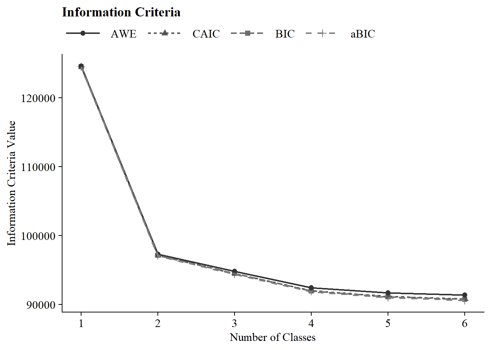
Plot LCA:
source(here("29-dang-lca-example", "functions","plot_lca.R"))
plot_lca(output_enum$c4_math_weighted.out)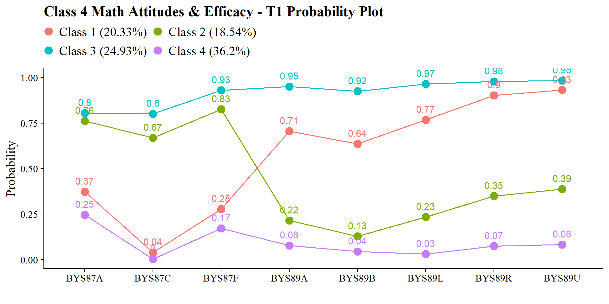
28.5 Manual ML Three-step
28.5.1 Step 1 - Class Enumeration w/ Auxiliary Specification
This step is done after class enumeration (or after you have selected the best latent class model). In this example, the four class model was the best. Now, we re-estimate the five-class model using optseed for efficiency. The difference here is the SAVEDATA command, where I can save the posterior probabilities and the modal class assignment that will be used in steps two and three.
step1 <- mplusObject(
TITLE = "Step 1 - Three-Step",
VARIABLE =
"categorical = bys87a,bys87c,bys87f,bys89a,
bys89b,bys89l,bys89r,bys89u;
usevar = bys87a,bys87c,bys87f,bys89a,
bys89b,bys89l,bys89r,bys89u;
classes = c(4);
auxiliary =
female
ses_dichotomized
f3onet2curr;
WEIGHT = f3bytscwt;",
ANALYSIS =
"estimator = mlr;
type = mixture;
starts = 0;
optseed = 399671;",
SAVEDATA =
"File=savedata.dat;
Save=cprob;",
OUTPUT = "residual tech11 tech14",
usevariables = colnames(els_data),
rdata = els_data)
step1_fit <- mplusModeler(step1,
dataout=here("29-dang-lca-example", "three_step", "Step1.dat"),
modelout=here("29-dang-lca-example", "three_step", "one.inp") ,
check=TRUE, run = TRUE, hashfilename = FALSE)Plot LCA
Class 1 = Low Math Attitudes, High Self-Efficacy (20.33%) Class 2 = High Math Attitudes, Low Self-Efficacy (18.546%) Class 3 = High Math Attitudes, High Self-Efficacy (24.93%) Class 4 = Low Math Attitudes, Low Self-Efficacy (36.2%)
source(here("29-dang-lca-example", "functions", "plot_lca.R"))
output_one <- readModels(here("29-dang-lca-example", "three_step", "one.out"))
plot_lca(model_name = output_one)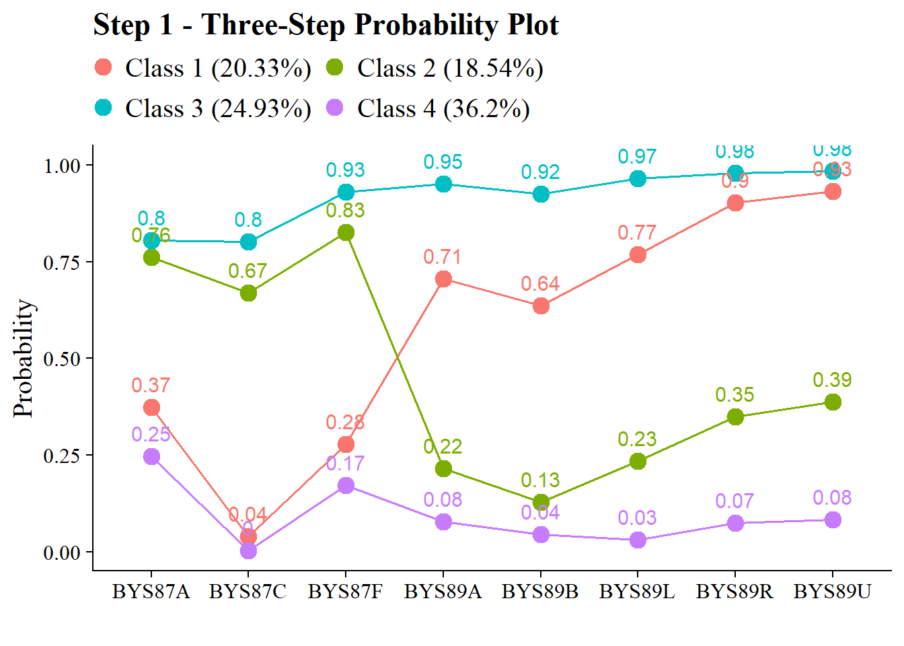
Check that log-likelihood values are the same
output_one <- readModels(here("29-dang-lca-example", "three_step", "one.out"))
output_one$summaries$LL
#> [1] -45812.59
enumeration_c5 <- readModels(here("29-dang-lca-example", "enumeration", "c4_math_weighted.out"))
enumeration_c5$summaries$LL
#> [1] -45812.5928.5.2 Step 2 - Determine Measurement Error
Extract logits for the classification probabilities for the most likely latent class
logit_cprobs <- as.data.frame(output_one$class_counts$logitProbs.mostLikely)
logit_cprobs
#> 1 2 3 4
#> 1 2.691 -0.448 -0.013 0
#> 2 -0.893 1.664 -1.308 0
#> 3 3.261 2.159 5.684 0
#> 4 -3.825 -3.826 -5.953 0Extract saved dataset from step one
savedata <- as.data.frame(output_one$savedata) %>%
rename(N = MLCC) #Rename the column in savedata named "MLCC" and change to "N"Check variable names in savedata (Mplus will cut off variable names that are longer than 8 characters)
names(savedata)
#> [1] "BYS87A" "BYS87C" "BYS87F" "BYS89A" "BYS89B"
#> [6] "BYS89L" "BYS89R" "BYS89U" "FEMALE" "SES_DICH"
#> [11] "F3ONET2C" "CPROB1" "CPROB2" "CPROB3" "CPROB4"
#> [16] "N" "F3BYTSCW"28.5.3 Step 3 - LCA Auxiliary Variable Model with 2 covariates and 1 distal outcome
Model with 1 covariate (FEMALE) and 1 distal outcome (Math IRT scores)
step3 <- mplusObject(
TITLE = "Step 3 - Three-Step",
VARIABLE =
"nominal=N;
classes = c(4);
usevar = N FEMALE SES_DICH F3ONET2C;
categorical = F3ONET2C;" , # Add covariates and distal outcomes in addition to `N` here
ANALYSIS =
"estimator = mlr;
type = mixture;
starts = 0;",
DEFINE =
"center FEMALE SES_DICH (grandmean);",
MODEL =
glue(
" %OVERALL%
F3ONET2C on FEMALE SES_DICH; ! covariate as a related to the distal outcome
C on female (f1-f3);
C on SES_DICH (s1-s3);
%C#1%
[n#1@{logit_cprobs[1,1]}]; ! MUST EDIT if you do not have a 5-class model.
[n#2@{logit_cprobs[1,2]}];
[n#3@{logit_cprobs[1,3]}];
[F3ONET2C$1](m1); ! conditional distal logit
%C#2%
[n#1@{logit_cprobs[2,1]}];
[n#2@{logit_cprobs[2,2]}];
[n#3@{logit_cprobs[2,3]}];
[F3ONET2C$1](m2);
%C#3%
[n#1@{logit_cprobs[3,1]}];
[n#2@{logit_cprobs[3,2]}];
[n#3@{logit_cprobs[3,3]}];
[F3ONET2C$1](m3);
%C#4%
[n#1@{logit_cprobs[4,1]}];
[n#2@{logit_cprobs[4,2]}];
[n#3@{logit_cprobs[4,3]}];
[F3ONET2C$1](m4);
"),
MODELCONSTRAINT =
"New (
! Distal mean differences (6 total for 4 classes)
diff12 diff13 diff14
diff23 diff24 diff34
);
! Distal mean comparisons
diff12 = m1-m2;
diff13 = m1-m3;
diff14 = m1-m4;
diff23 = m2-m3;
diff24 = m2-m4;
diff34 = m3-m4;
",
MODELTEST = " ! omnibus test of distal means
m1=m2;
m2=m3;
m3=m4;
!f1=0; ! omnibus test of covariate logits (female)
!f2=0;
!f3=0;
!s1=0; ! omnibus test of covariate logits (ses)
!s2=0;
!s3=0;
",
OUTPUT = "sampstat",
usevariables = colnames(savedata),
rdata = savedata)
step3_fit <- mplusModeler(step3,
dataout=here("29-dang-lca-example", "three_step", "Step3.dat"),
modelout=here("29-dang-lca-example", "three_step", "three_distal.inp"),
check=TRUE, run = TRUE, hashfilename = FALSE)Rerun model with different model test:
# Update the model test by overwriting string
step3$MODELTEST <- "f1=0; f2=0; f3=0;"
# Then run it again
mplusModeler(step3,
dataout=here("29-dang-lca-example", "three_step", "Step3.dat"),
modelout=here("29-dang-lca-example", "three_step", "three_female.inp"),
check=TRUE, run = TRUE, hashfilename = FALSE)Rerun model with different model test:
# Update the model test by overwriting string
step3$MODELTEST <- "s1=0; s2=0; s3=0;"
# Then run it again
mplusModeler(step3,
dataout=here("29-dang-lca-example", "three_step", "Step3.dat"),
modelout=here("29-dang-lca-example", "three_step", "three_ses.inp"),
check=TRUE, run = TRUE, hashfilename = FALSE)Compare Step 1 classes and Step 3 classes
output_one <- readModels(here("29-dang-lca-example", "three_step", "one.out"))
output_one$class_counts$modelEstimated
#> class count proportion
#> 1 1 2468.993 0.20328
#> 2 2 2252.181 0.18543
#> 3 3 3028.463 0.24934
#> 4 4 4396.363 0.36196
output_three <- readModels(here("29-dang-lca-example", "three_step", "three_distal.out"))
output_three$class_counts$modelEstimated
#> class count proportion
#> 1 1 2325.724 0.19148
#> 2 2 2357.554 0.19410
#> 3 3 3066.438 0.25246
#> 4 4 4396.284 0.36195NOTE: If there are notable differences between class formation in the Step 1 and the Step 3 models, it means there are one of more covariates included in the Step 3 model that may be sources of unaccounted-for DIF
28.6 Visualizations
28.6.0.1 Wald Test Table
This is testing if there is a relation between the latent class variable and the distal outcome.
Note: There are two outputs, each containing separate Wald tests (one for Math IRT scores and the other for self-reported gender). However, other than the Wald test, the outputs are identical. Either can be used for subsequent code.
# Make a Wald table function
wald_table <- function(mplus_model, table_title) {
# Read the model
model_output <- mplus_model
# Extract information as data frame
wald <- as.data.frame(model_output[["summaries"]]) %>%
dplyr::select(WaldChiSq_Value:WaldChiSq_PValue) %>%
mutate(WaldChiSq_DF = paste0("(", WaldChiSq_DF, ")")) %>%
unite(wald_test, WaldChiSq_Value, WaldChiSq_DF, sep = " ") %>%
rename(pval = WaldChiSq_PValue) %>%
mutate(pval = ifelse(pval<0.001, paste0("<.001*"),
ifelse(pval<0.05, paste0(scales::number(pval, accuracy = .001), "*"),
scales::number(pval, accuracy = .001))))
# Create the gt table
wald %>%
gt() %>%
tab_header(
title = table_title) %>%
cols_label(
wald_test = md("Wald Test (*df*)"),
pval = md("*p*-value")) %>%
cols_align(align = "center") %>%
opt_align_table_header(align = "left") %>%
gt::tab_options(table.font.names = "serif")
}Use wald_table funtion
output_three_distal <- readModels(here("29-dang-lca-example", "three_step", "three_distal.out"))
output_three_female <- readModels(here("29-dang-lca-example", "three_step", "three_female.out"))
output_three_ses <- readModels(here("29-dang-lca-example", "three_step", "three_ses.out"))
wald_table(output_three_distal, "Wald Test Distal Means (Math IRT Scores)")| Wald Test Distal Means (Math IRT Scores) | |
| Wald Test (df) | p-value |
|---|---|
| 39.126 (3) | <.001* |
wald_table(output_three_female, "Wald Test Distal Means (Female)")| Wald Test Distal Means (Female) | |
| Wald Test (df) | p-value |
|---|---|
| 171.432 (3) | <.001* |
wald_table(output_three_ses, "Wald Test Distal Means (SES)")| Wald Test Distal Means (SES) | |
| Wald Test (df) | p-value |
|---|---|
| 120.158 (3) | <.001* |
Note: There are two outputs, each containing separate Wald tests (one for Math IRT scores and the other for self-reported gender). However, other than the Wald test, the outputs are identical. Either can be used for subsequent code.
28.6.0.2 Table of Covariates Relations
Make predictor_table function
# Make a predictor table function
predictor_table <- function(mplus_output,
var_labels = NULL,
table_title = "Predictors of Class Membership") {
# Extract Unstandardized Logits
cov_data <- as.data.frame(mplus_output[["parameters"]][["unstandardized"]]) %>%
filter(str_detect(paramHeader, "\\.ON$")) %>%
filter(!str_detect(LatentClass, "Categorical\\.Latent\\.Variables")) %>%
mutate(
param_label = if (!is.null(var_labels)) {
str_replace_all(param, var_labels)
} else {
str_to_title(param)
},
latent_class = paste("Class", LatentClass)
) %>%
mutate(
logit = paste0(format(round(est, 3), nsmall = 3), " (", format(round(se, 2), nsmall = 2), ")"),
pval_label = case_when(
pval < 0.001 ~ "<.001*",
pval < 0.05 ~ paste0(scales::number(pval, accuracy = .001), "*"),
TRUE ~ scales::number(pval, accuracy = .001)
)
) %>%
dplyr::select(param_label, latent_class, logit, pval_label)
# Extract Odds Ratios
or_data <- as.data.frame(mplus_output[["parameters"]][["odds"]]) %>%
filter(str_detect(paramHeader, "\\.ON$")) %>%
mutate(
param_label = if (!is.null(var_labels)) {
str_replace_all(param, var_labels)
} else {
str_to_title(param)
},
latent_class = paste("Class", LatentClass),
CI = paste0("[", format(round(lower_2.5ci, 3), nsmall = 3), ", ",
format(round(upper_2.5ci, 3), nsmall = 3), "]")
) %>%
dplyr::select(param_label, latent_class, or = est, CI)
# Combine and Format Table
or_data %>%
full_join(cov_data, by = c("param_label", "latent_class")) %>%
dplyr::select(param_label, latent_class, logit, pval_label, or, CI) %>%
gt(groupname_col = "latent_class", rowname_col = "param_label") %>%
tab_header(title = table_title) %>%
cols_label(
logit = md("Logit (*se*)"),
or = md("Odds Ratio"),
CI = md("95% CI"),
pval_label = md("*p*-value")
) %>%
sub_missing(missing_text = "-") %>%
cols_align(align = "center") %>%
opt_align_table_header(align = "left") %>%
gt::tab_options(table.font.names = "serif")
}Use predictor_table function
output_three <- readModels(here("29-dang-lca-example", "three_step", "three_distal.out"))
predictor_table(output_three, var_labels = c("FEMALE" = "Female", "SES_DICH" = "SES"))28.6.0.3 Plot of Gender Differences
Class 1 = Low Math Attitudes, High Self-Efficacy (20.33%) Class 2 = High Math Attitudes, Low Self-Efficacy (18.546%) Class 3 = High Math Attitudes, High Self-Efficacy (24.93%) Class 4 = Low Math Attitudes, Low Self-Efficacy (36.2%)
output_three <- readModels(here("29-dang-lca-example", "three_step", "three_distal.out"))
# Extract Centering Values from Univariate Stats
# These are the values Mplus used for the 'Female' variable after centering
female_x <- savedata %>% summarize(max_val = max(FEMALE, na.rm = TRUE)) %>% pull(max_val)
male_x <- savedata %>% summarize(min_val = min(FEMALE, na.rm = TRUE)) %>% pull(min_val)
# Extract Intercepts and Slopes from Parameters
params <- as.data.frame(output_three$parameters$unstandardized)
# Get Intercepts (C#1 to C#4)
intercepts <- params %>%
filter(paramHeader == "Intercepts" & str_detect(param, "C#")) %>%
mutate(Class = as.numeric(str_extract(param, "\\d+"))) %>%
select(Class, intercept = est)
# Get Slopes (C#1.ON to C#4.ON)
slopes <- params %>%
filter(str_detect(paramHeader, "C#\\d+\\.ON") & param == "FEMALE") %>%
mutate(Class = as.numeric(str_extract(paramHeader, "\\d+"))) %>%
select(Class, slope = est)
# Merge and add the Reference Class (Class 4), which is fixed to 0 in your model
logits_df <- full_join(intercepts, slopes, by = "Class") %>%
add_row(Class = 4, intercept = 0, slope = 0) %>%
arrange(Class)
# Class labels
class_labels <- c("1" = "Low Math Attitudes, High Self-Efficacy (20.33%)",
"2" = "High Math Attitudes, Low Self-Efficacy (18.546%)",
"3" = "High Math Attitudes, High Self-Efficacy (24.93%)",
"4" = "Low Math Attitudes, Low Self-Efficacy (36.2%)")
# Calculate Predicted Probabilities
plot_data <- logits_df %>%
# Create a row for each gender within each class
crossing(Gender = c("Male", "Female")) %>%
mutate(
# Use centered values: Male (-0.485) and Female (0.515)
x_val = ifelse(Gender == "Male", male_x, female_x),
logit = intercept + (slope * x_val)
) %>%
group_by(Gender) %>%
mutate(
# Apply Softmax: P = exp(logit) / sum(exp(logits))
prob = exp(logit) / sum(exp(logit)),
Class_Name = str_wrap(class_labels[as.character(Class)], width = 20)
)
# Generate the Plot
ggplot(plot_data, aes(x = fct_inorder(Class_Name), y = prob, fill = Gender)) +
geom_bar(stat = "identity", position = position_dodge(width = 0.9), color = "black") +
geom_text(aes(label = sprintf("%.2f", prob)),
position = position_dodge(width = 0.9),
vjust = -0.5, size = 3.5, family = "serif") +
scale_y_continuous(expand = expansion(mult = c(0, 0.15))) +
labs(
title = "Model-Estimated Class Proportions by Gender",
subtitle = "Based on Grand-Mean Centered Multinomial Logistic Regression",
x = "",
y = "Probability",
fill = "Gender"
) +
theme_cowplot() +
theme(
text = element_text(family = "serif"),
panel.grid.major.x = element_blank(),
legend.position = "top"
)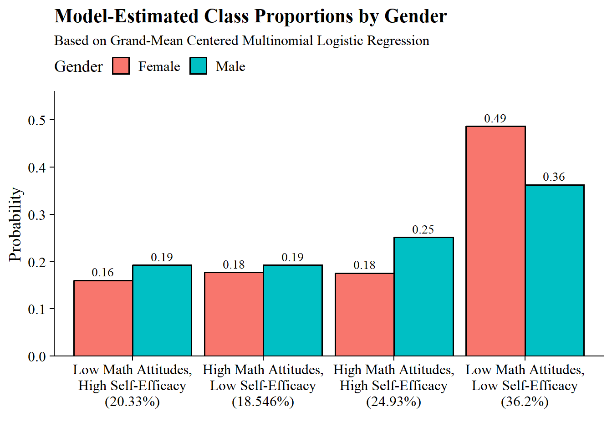
28.6.0.4 Plot of SES Differences
output_three <- readModels(here("29-dang-lca-example", "three_step", "three_distal.out"))
# Extract Centering Values from Univariate Stats
# These are the values Mplus used for the 'Female' variable after centering
low_ses_x <- savedata %>% summarize(max_val = max(SES_DICH, na.rm = TRUE)) %>% pull(max_val)
other_ses_x <- savedata %>% summarize(min_val = min(SES_DICH, na.rm = TRUE)) %>% pull(min_val)
# Extract Intercepts and Slopes from Parameters
params <- as.data.frame(output_three$parameters$unstandardized)
# Get Intercepts (C#1 to C#4)
intercepts <- params %>%
filter(paramHeader == "Intercepts" & str_detect(param, "C#")) %>%
mutate(Class = as.numeric(str_extract(param, "\\d+"))) %>%
select(Class, intercept = est)
# Get Slopes (C#1.ON to C#4.ON)
slopes <- params %>%
filter(str_detect(paramHeader, "C#\\d+\\.ON") & param == "SES_DICH") %>%
mutate(Class = as.numeric(str_extract(paramHeader, "\\d+"))) %>%
select(Class, slope = est)
# Merge and add the Reference Class (Class 5), which is fixed to 0 in your model
logits_df <- full_join(intercepts, slopes, by = "Class") %>%
add_row(Class = 4, intercept = 0, slope = 0) %>%
arrange(Class)
# Class labels
class_labels <- c("1" = "Low Math Attitudes, High Self-Efficacy (20.33%)",
"2" = "High Math Attitudes, Low Self-Efficacy (18.546%)",
"3" = "High Math Attitudes, High Self-Efficacy (24.93%)",
"4" = "Low Math Attitudes, Low Self-Efficacy (36.2%)")
# Calculate Predicted Probabilities
plot_data <- logits_df %>%
# Create a row for each gender within each class
crossing(SES = c("Other SES", "Low SES")) %>%
mutate(
# Use centered values: Male (-0.485) and Female (0.515)
x_val = ifelse(SES == "Other SES", other_ses_x, low_ses_x),
logit = intercept + (slope * x_val)
) %>%
group_by(SES) %>%
mutate(
# Apply Softmax: P = exp(logit) / sum(exp(logits))
prob = exp(logit) / sum(exp(logit)),
Class_Name = str_wrap(class_labels[as.character(Class)], width = 20)
)
# Generate the Plot
ggplot(plot_data, aes(x = fct_inorder(Class_Name), y = prob, fill = SES)) +
geom_bar(stat = "identity", position = position_dodge(width = 0.9), color = "black") +
geom_text(aes(label = sprintf("%.2f", prob)),
position = position_dodge(width = 0.9),
vjust = -0.5, size = 3.5, family = "serif") +
scale_y_continuous(expand = expansion(mult = c(0, 0.15))) +
labs(
title = "Model-Estimated Class Proportions by SES",
subtitle = "Based on Grand-Mean Centered Multinomial Logistic Regression",
x = "",
y = "Probability",
fill = "SES"
) +
theme_cowplot() +
theme(
text = element_text(family = "serif"),
panel.grid.major.x = element_blank(),
legend.position = "top"
)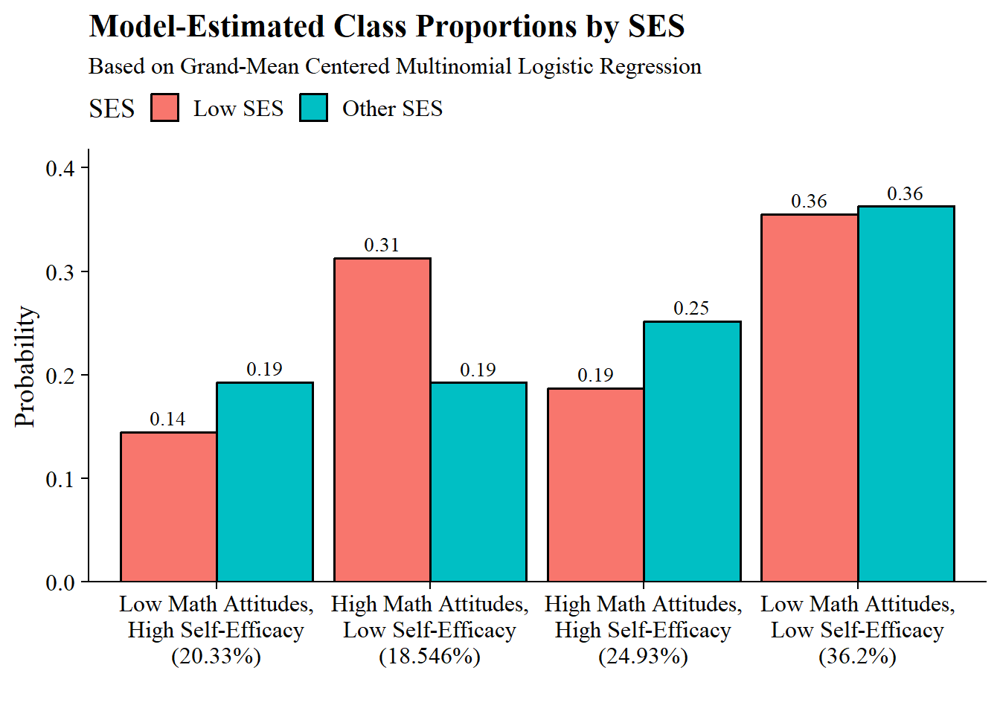
28.6.0.5 Table of Pairwise Distal Outcome Differences
Make diff_table function
diff_table <- function(mplus_output,
prefix = "DIFF",
table_title = "Pairwise Comparisons") {
# Extract and Clean
diff_data <- as.data.frame(mplus_output[["parameters"]][["unstandardized"]]) %>%
# Dynamically filter by the prefix provided (e.g., DIFF or FEM)
filter(str_detect(param, paste0("^", prefix))) %>%
dplyr::select(param, est, se, pval) %>%
# Format Estimate and SE
mutate(
estimate = paste0(format(round(est, 3), nsmall = 3),
" (", format(round(se, 2), nsmall = 2), ")")
) %>%
# Logic to split "DIFF12" into "1" and "2"
mutate(
digits = str_remove(param, prefix),
Group1 = substr(digits, 1, 1),
Group2 = substr(digits, 2, 2),
comparison = paste0("Class ", Group1, " vs. Class ", Group2)
) %>%
# Format p-values
mutate(pval_label = case_when(
pval < 0.001 ~ "<.001*",
pval < 0.05 ~ paste0(scales::number(pval, accuracy = .001), "*"),
TRUE ~ scales::number(pval, accuracy = .001)
)) %>%
dplyr::select(comparison, estimate, pval_label)
# Create Table
diff_data %>%
gt() %>%
tab_header(title = table_title) %>%
cols_label(
comparison = "Comparison",
estimate = md("Difference (*se*)"),
pval_label = md("*p*-value")
) %>%
cols_align(align = "center") %>%
opt_align_table_header(align = "left") %>%
gt::tab_options(table.font.names = "serif")
}Use diff_table function
output_three <- readModels(here("29-dang-lca-example", "three_step", "three_distal.out"))
diff_table(
mplus_output = output_three,
prefix = "DIFF",
table_title = "Pairwise Comparisons of Distal Outcome (STEM Occupation)"
)| Pairwise Comparisons of Distal Outcome (STEM Occupation) | ||
| Comparison | Difference (se) | p-value |
|---|---|---|
| Class 1 vs. Class 2 | -0.037 (0.10) | 0.709 |
| Class 1 vs. Class 3 | 0.296 (0.08) | <.001* |
| Class 1 vs. Class 4 | -0.082 (0.08) | 0.299 |
| Class 2 vs. Class 3 | 0.332 (0.09) | <.001* |
| Class 2 vs. Class 4 | -0.045 (0.09) | 0.601 |
| Class 3 vs. Class 4 | -0.378 (0.06) | <.001* |
28.6.0.6 Plot Distal Outcome Means
output_three <- readModels(here("29-dang-lca-example", "three_step", "three_distal.out"))
plot_data <- data.frame(
class_w_label = c(
"Low Math Attitudes,\nHigh Self-Efficacy (20.33%)",
"High Math Attitudes,\nLow Self-Efficacy (18.55%)",
"High Math Attitudes,\nHigh Self-Efficacy (24.93%)",
"Low Math Attitudes,\nLow Self-Efficacy (36.2%)"
),
est = c(24.6, 24.0, 30.5, 23.1)
)
# Plot bar graphs
plot_data %>%
ggplot(aes(x=class_w_label, y = est, fill = class_w_label)) +
geom_col(position = "dodge", stat = "identity", color = "black") +
geom_text(aes(label = paste0(est, "%")),
family = "serif", size = 4,
position=position_dodge(.9),
vjust = 8) +
# scale_fill_grey(start = .4, end = .7) + # Remove for colorful bars
labs(y="STEM Occupation", x="",
title = "Distal Mean Comparision for STEM Occupation") +
theme_cowplot() +
theme(text = element_text(family = "serif"),
legend.position="none")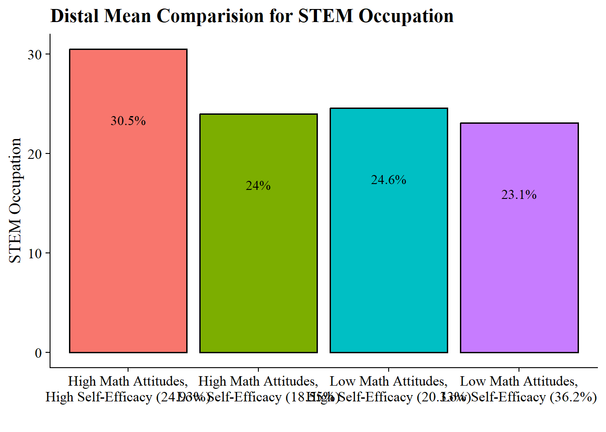
28.6.0.7 Distal outcome regressed on the covariate
Is there a relation between the distal outcome (Math IRT Scores) and the covariate (Gender)?
output_three <- readModels(here("29-dang-lca-example", "three_step", "three_distal.out"))
# Extract information as data frame
donx <- as.data.frame(output_three[["parameters"]][["unstandardized"]]) %>%
filter(!str_detect(LatentClass, "Categorical\\.Latent\\.Variables")) %>%
filter(param %in% c("FEMALE", "SES_DICH")) %>%
mutate(param = str_replace(param, "FEMALE", "Female"),
param = str_replace(param, "SES_DICH", "SES")) %>%
mutate(LatentClass = sub("^","Class ", LatentClass)) %>%
dplyr::select(!paramHeader) %>%
mutate(se = paste0("(", format(round(se,2), nsmall =2), ")")) %>%
unite(estimate, est, se, sep = " ") %>%
dplyr::select(param, estimate, pval) %>%
distinct(param, .keep_all=TRUE) %>%
mutate(pval = ifelse(pval<0.001, paste0("<.001*"),
ifelse(pval<0.05, paste0(scales::number(pval, accuracy = .001), "*"),
scales::number(pval, accuracy = .001))))
# Create table
donx %>%
gt(groupname_col = "LatentClass", rowname_col = "param") %>%
tab_header(
title = "Covariates Predicting STEM Occupation") %>%
cols_label(
estimate = md("Estimate (*se*)"),
pval = md("*p*-value")) %>%
sub_missing(1:3,
missing_text = "") %>%
sub_values(values = c("999.000"), replacement = "-") %>%
cols_align(align = "center") %>%
opt_align_table_header(align = "left") %>%
gt::tab_options(table.font.names = "serif")| Covariates Predicting STEM Occupation | ||
| Estimate (se) | p-value | |
|---|---|---|
| Female | -0.221 (0.05) | <.001* |
| SES | -0.336 (0.06) | <.001* |

<<<<<<<< HEAD:31-lta-three-timepoint.Rmd <<<<<<<< HEAD:31-lta-three-timepoint.Rmd # ML 3-step and BCH in Mplus (Nylund-Gibson, K., Arch, D. N., & Carter, D., 2026) ======== Nylund-Gibson, K., Arch, D. N., & Carter, D. (2026) >>>>>>>> b52a7ad760959260c2954fae4fe7f361c4713df2:30-lta-three-timepoint.Rmd ======== Nylund-Gibson, K., Arch, D. N., & Carter, D. (2026) >>>>>>>> b52a7ad760959260c2954fae4fe7f361c4713df2:30-lta-three-timepoint.Rmd
Nylund-Gibson, K., Arch, D. N., & Carter, D. (2026). Latent transition analysis with auxiliary variables: A demonstration of the ML 3-step and BCH in Mplus. The Quantitative Methods for Psychology, 22(1), 1–8. doi: 10.20982/tqmp.22.1.p001.
28.7 Introduction
This R Markdown document accompanies the tutorial manuscript Latent Transition Analysis with Auxiliary Variables: A Demonstration of the ML 3-Step and BCH Methods in Mplus using data from the Longitudinal Study of American Youth (LSAY). Its purpose is to provide a fully reproducible, step-by-step implementation of the multi-step LTA workflow described in the paper using Mplus and the MplusAutomation package in R.
The focus of this document is operational rather than conceptual.
Before estimating the latent class structure, we begin by loading the necessary packages and preparing the dataset to ensure the indicators and sample structure are ready for LTA.
28.8 Data Setup and Preparation
28.8.1 Load Required Packages
# Installation required when using Mplus version 8.6
# devtools::install_github("michaelhallquist/MplusAutomation")
#if (!requireNamespace("BiocManager", quietly = TRUE))
# install.packages("BiocManager")
#BiocManager::install("rhdf5")
library(MplusAutomation)
library(rhdf5)
library(tidyverse)
library(haven)
library(here)
library(glue)
library(janitor)
library(gt)
library(naniar)
library(psych)
library(modelsummary)
library(cowplot)
library(patchwork)28.9 Descriptive Statistics
28.9.1 Indicators
# Define survey questions
all_questions <- c(
"AB39A", "AB39H", "AB39I", "AB39K", "AB39L", "AB39M", "AB39T", "AB39U", "AB39W", "AB39X", # 7th grade
"GA32A", "GA32H", "GA32I", "GA32K", "GA32L", "GA33A", "GA33H", "GA33I", "GA33K", "GA33L", # 10th grade
"KA46A", "KA46H", "KA46I", "KA46K", "KA46L", "KA47A", "KA47H", "KA47I", "KA47K", "KA47L" # 12th grade
)
# Function to compute stats (count, mean, SD, range)
compute_stats <- function(data, question, grade, question_name) {
data %>%
summarise(
Grade = grade,
Count = sum(!is.na(.data[[question]])),
Mean = mean(.data[[question]], na.rm = TRUE),
SD = sd(.data[[question]], na.rm = TRUE),
Min = min(.data[[question]], na.rm = TRUE),
Max = max(.data[[question]], na.rm = TRUE)
) %>%
mutate(Question = question_name)
}
# Define question names and mappings
table_setup <- tibble(
question_code = all_questions,
grade = rep(c(7, 10, 12), each = 10),
question_name = rep(
c(
"I enjoy math",
"Math is useful in everyday problems",
"Math helps a person think logically",
"It is important to know math to get a good job",
"I will use math in many ways as an adult",
"I enjoy science",
"Science is useful in everyday problems",
"Science helps a person think logically",
"It is important to know science to get a good job",
"I will use science in many ways as an adult"
),
times = 3
)
)
# Compute stats for all questions
table1_data <- pmap_dfr(
list(table_setup$question_code, table_setup$grade, table_setup$question_name),
~compute_stats(lsay_data, ..1, ..2, ..3)
) %>%
mutate(
Mean = round(Mean, 2),
SD = round(SD, 2),
Min = round(Min, 2),
Max = round(Max, 2)
) %>%
arrange(match(Question, table_setup$question_name), Grade) %>%
select(Question, Grade, Count, Mean, SD, Min, Max)
# Build table
table1_gt <- table1_data %>%
gt(groupname_col = "Question") %>%
tab_header(
title = "Table 1. Descriptive Statistics for Mathematics and Science Attitudinal Survey Items Included in Analyses"
) %>%
cols_label(
Grade = "Grade",
Count = "N",
Mean = "Prop.",
SD = "SD",
Min = "Min",
Max = "Max"
) %>%
fmt_number(
columns = c(Mean, SD),
decimals = 2
)
# Show table
table1_gt| Table 1. Descriptive Statistics for Mathematics and Science Attitudinal Survey Items Included in Analyses | |||||
| Grade | N | Prop. | SD | Min | Max |
|---|---|---|---|---|---|
| I enjoy math | |||||
| 7 | 1882 | 0.69 | 0.46 | 0 | 1 |
| 10 | 1532 | 0.63 | 0.48 | 0 | 1 |
| 12 | 1120 | 0.57 | 0.50 | 0 | 1 |
| Math is useful in everyday problems | |||||
| 7 | 1851 | 0.72 | 0.45 | 0 | 1 |
| 10 | 1520 | 0.65 | 0.48 | 0 | 1 |
| 12 | 1111 | 0.67 | 0.47 | 0 | 1 |
| Math helps a person think logically | |||||
| 7 | 1847 | 0.65 | 0.48 | 0 | 1 |
| 10 | 1517 | 0.69 | 0.46 | 0 | 1 |
| 12 | 1108 | 0.71 | 0.45 | 0 | 1 |
| It is important to know math to get a good job | |||||
| 7 | 1854 | 0.77 | 0.42 | 0 | 1 |
| 10 | 1517 | 0.68 | 0.47 | 0 | 1 |
| 12 | 1105 | 0.61 | 0.49 | 0 | 1 |
| I will use math in many ways as an adult | |||||
| 7 | 1857 | 0.75 | 0.43 | 0 | 1 |
| 10 | 1525 | 0.65 | 0.48 | 0 | 1 |
| 12 | 1104 | 0.65 | 0.48 | 0 | 1 |
| I enjoy science | |||||
| 7 | 1873 | 0.62 | 0.48 | 0 | 1 |
| 10 | 1526 | 0.59 | 0.49 | 0 | 1 |
| 12 | 1105 | 0.55 | 0.50 | 0 | 1 |
| Science is useful in everyday problems | |||||
| 7 | 1840 | 0.40 | 0.49 | 0 | 1 |
| 10 | 1516 | 0.43 | 0.50 | 0 | 1 |
| 12 | 1099 | 0.48 | 0.50 | 0 | 1 |
| Science helps a person think logically | |||||
| 7 | 1850 | 0.49 | 0.50 | 0 | 1 |
| 10 | 1516 | 0.53 | 0.50 | 0 | 1 |
| 12 | 1100 | 0.56 | 0.50 | 0 | 1 |
| It is important to know science to get a good job | |||||
| 7 | 1857 | 0.40 | 0.49 | 0 | 1 |
| 10 | 1518 | 0.43 | 0.50 | 0 | 1 |
| 12 | 1099 | 0.38 | 0.49 | 0 | 1 |
| I will use science in many ways as an adult | |||||
| 7 | 1873 | 0.46 | 0.50 | 0 | 1 |
| 10 | 1524 | 0.42 | 0.49 | 0 | 1 |
| 12 | 1103 | 0.44 | 0.50 | 0 | 1 |
Data Verification Summary
All attitudinal indicators fall within the expected 0–1 range and show adequate variability across Grades 7, 10, and 12. No recoding or item removal is required before proceeding to enumeration.
28.9.2 Covariates
# Define covariates
covariates <- c(
"MINORITY", "FEMALE"
)
# Function to compute stats (count, mean, SD, range, % missing)
compute_stats <- function(data, question, question_name) {
total_n <- nrow(data)
missing_n <- sum(is.na(data[[question]]))
percent_missing <- (missing_n / total_n) * 100
data %>%
summarise(
Count = sum(!is.na(.data[[question]])),
Mean = mean(.data[[question]], na.rm = TRUE),
SD = sd(.data[[question]], na.rm = TRUE),
Min = min(.data[[question]], na.rm = TRUE),
Max = max(.data[[question]], na.rm = TRUE)
) %>%
mutate(
Question = question_name,
PercentMissing = round(percent_missing, 2)
)
}
# Define question names and mappings
table_setup <- tibble(
question_code = covariates,
question_name = c(
"Minority",
"Gender"
)
)
# Compute stats for all questions
table1_data <- pmap_dfr(
list(table_setup$question_code, table_setup$question_name),
~compute_stats(lsay_data, ..1, ..2)
) %>%
mutate(
Mean = round(Mean, 2),
SD = round(SD, 2),
Min = round(Min, 2),
Max = round(Max, 2)
) %>%
select(Question, Count, PercentMissing, Mean, SD, Min, Max)
# Build table
table1_gt <- table1_data %>%
gt() %>%
tab_header(
title = "Table 1. Descriptive Statistics for Covariates Included in Analyses"
) %>%
cols_label(
Count = "N",
PercentMissing = "% Missing",
Mean = "Mean or Proportion",
SD = "SD",
Min = "Min",
Max = "Max"
) %>%
fmt_number(
columns = c(PercentMissing, Mean, SD, Min, Max),
decimals = 2
)
# Show table
table1_gt| Table 1. Descriptive Statistics for Covariates Included in Analyses | ||||||
| Question | N | % Missing | Mean or Proportion | SD | Min | Max |
|---|---|---|---|---|---|---|
| Minority | 1824 | 4.60 | 0.17 | 0.38 | 0.00 | 1.00 |
| Gender | 1912 | 0.00 | 0.51 | 0.50 | 0.00 | 1.00 |
Data Verification Summary
Covariates show valid ranges, expected missingness patterns, and sufficient variability for use in auxiliary-variable models. All covariates can be included as planned under full-information maximum likelihood.
28.10 Phase 1: Latent Class Enumeration at Each Timepoint (Exploratory Stage)
28.10.1 Time 1 Enumeration (Grade 7)
t1_enum <- lapply(1:6, function(k) {
enum_t1 <- mplusObject(
TITLE = glue("Class {k} Time 1"),
VARIABLE = glue(
"categorical = AB39A AB39H AB39I AB39K AB39L AB39M AB39T AB39U AB39W AB39X;
usevar = AB39A AB39H AB39I AB39K AB39L AB39M AB39T AB39U AB39W AB39X;
classes = c({k});"),
ANALYSIS =
"estimator = mlr;
type = mixture;
starts = 500 100;
processors = 12;",
OUTPUT = "sampstat residual tech11 tech14;",
usevariables = colnames(lsay_data),
rdata = lsay_data)
enum_t1_fit <- mplusModeler(enum_t1,
dataout=here("three_lta", "phase_1", "t1", "t1.dat"),
modelout=glue(here("three_lta", "phase_1", "t1", "c{k}_lca_t1.inp")),
check=TRUE, run = TRUE, hashfilename = FALSE)
})28.10.2 Time 2 Enumeration (Grade 10)
t2_enum <- lapply(1:6, function(k) {
enum_t2 <- mplusObject(
TITLE = glue("Class {k} Time 2"),
VARIABLE = glue(
"categorical = GA32A GA32H GA32I GA32K GA32L GA33A GA33H GA33I GA33K GA33L;
usevar = GA32A GA32H GA32I GA32K GA32L GA33A GA33H GA33I GA33K GA33L;
classes = c({k});"),
ANALYSIS =
"estimator = mlr;
type = mixture;
starts = 500 100;
processors = 12;",
OUTPUT = "sampstat residual tech11 tech14;",
usevariables = colnames(lsay_data),
rdata = lsay_data)
enum_t2_fit <- mplusModeler(enum_t2,
dataout=here("three_lta", "phase_1", "t2", "t2.dat"),
modelout=glue(here("three_lta", "phase_1", "t2", "c{k}_lca_t2.inp")),
check=TRUE, run = TRUE, hashfilename = FALSE)
})28.10.3 Time 3 Enumeration (Grade 12)
t3_enum <- lapply(1:6, function(k) {
enum_t3 <- mplusObject(
TITLE = glue("Class {k} Time 3"),
VARIABLE = glue(
"categorical = KA46A KA46H KA46I KA46K KA46L KA47A KA47H KA47I KA47K KA47L;
usevar = KA46A KA46H KA46I KA46K KA46L KA47A KA47H KA47I KA47K KA47L;
classes = c({k});"),
ANALYSIS =
"estimator = mlr;
type = mixture;
starts = 500 100;
processors = 12;",
OUTPUT = "sampstat residual tech11 tech14;",
usevariables = colnames(lsay_data),
rdata = lsay_data)
enum_t3_fit <- mplusModeler(enum_t3,
dataout=here("three_lta", "phase_1", "t3", "t3.dat"),
modelout=glue(here("three_lta", "phase_1", "t3", "c{k}_lca_t3.inp")),
check=TRUE, run = TRUE, hashfilename = FALSE)
})Enumeration is completed for Grade 12. Agreement in class number and stability across all three waves provides initial empirical support for considering a longitudinal model.
28.11 Extracting and Summarizing Model Fit
28.11.1 Time 1
source(here("functions", "extract_mplus_info.R"))
source(here("functions","enum_table_lca.R"))
# Define the directory where all of the .out files are located.
output_dir <- here("three_lta", "phase_1","t1")
# Get all .out files
output_files <- list.files(output_dir, pattern = "\\.out$", full.names = TRUE)
# Process all .out files into one dataframe
final_data <- map_dfr(output_files, extract_mplus_info_extended)
# Extract Sample_Size from final_data
sample_size <- unique(final_data$Sample_Size)
output_enum_t1 <- readModels(here("three_lta", "phase_1","t1"), quiet = TRUE)
fit_table_lca(output_enum_t1, final_data)| Model Fit Summary Table1 | |||||||||||
| Classes | Par | LL | % Converged | % Replicated |
Model Fit Indices
|
LRTs
|
Smallest Class
|
||||
|---|---|---|---|---|---|---|---|---|---|---|---|
| BIC | aBIC | CAIC | AWE | VLMR | BLRT | n (%) | |||||
| Class 1 Time 1 | 10 | −11,803.43 | 100% | 100% | 23,682.28 | 23,650.51 | 23,692.28 | 23,787.70 | – | – | 1886 (100%) |
| Class 2 Time 1 | 21 | −10,418.76 | 100% | 100% | 20,995.91 | 20,929.19 | 21,016.91 | 21,217.29 | <.001 | <.001 | 782 (41.5%) |
| Class 3 Time 1 | 32 | −10,165.87 | 36% | 100% | 20,573.10 | 20,471.44 | 20,605.10 | 20,910.45 | 0.00 | <.001 | 384 (20.4%) |
| Class 4 Time 1 | 43 | −10,042.97 | 64% | 98% | 20,410.26 | 20,273.64 | 20,453.26 | 20,863.57 | 0.00 | <.001 | 390 (20.7%) |
| Class 5 Time 1 | 54 | −9,969.24 | 66% | 47% | 20,345.76 | 20,174.20 | 20,399.76 | 20,915.04 | 0.04 | <.001 | 175 (9.3%) |
| Class 6 Time 1 | 65 | −9,915.15 | 42% | 67% | 20,320.54 | 20,114.04 | 20,385.54 | 21,005.78 | 0.01 | <.001 | 180 (9.5%) |
| 1 Note. Par = Parameters; LL = model log likelihood; BIC = Bayesian information criterion; aBIC = sample size adjusted BIC; CAIC = consistent Akaike information criterion; AWE = approximate weight of evidence criterion; BLRT = bootstrapped likelihood ratio test p-value; VLMR = Vuong-Lo-Mendell-Rubin adjusted likelihood ratio test p-value; cmPk = approximate correct model probability. | |||||||||||
IC Plot
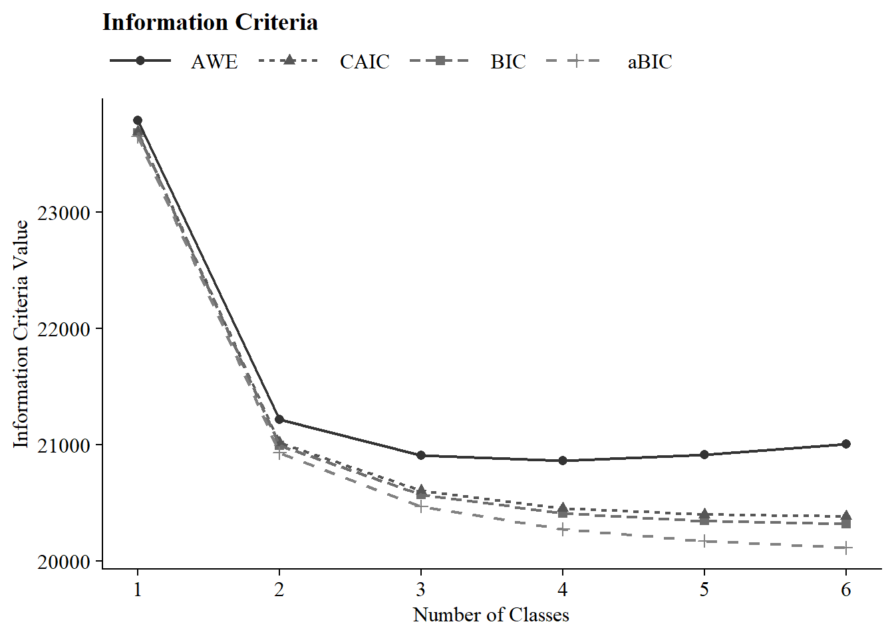
28.11.2 Time 2
# Define the directory where all of the .out files are located.
output_dir <- here("three_lta", "phase_1","t2")
# Get all .out files
output_files <- list.files(output_dir, pattern = "\\.out$", full.names = TRUE)
# Process all .out files into one dataframe
final_data <- map_dfr(output_files, extract_mplus_info_extended)
# Extract Sample_Size from final_data
sample_size <- unique(final_data$Sample_Size)
output_enum_t2 <- readModels(here("three_lta", "phase_1","t2"), quiet = TRUE)
fit_table_lca(output_enum_t2, final_data)| Model Fit Summary Table1 | |||||||||||
| Classes | Par | LL | % Converged | % Replicated |
Model Fit Indices
|
LRTs
|
Smallest Class
|
||||
|---|---|---|---|---|---|---|---|---|---|---|---|
| BIC | aBIC | CAIC | AWE | VLMR | BLRT | n (%) | |||||
| Class 1 Time 2 | 10 | −10,072.93 | 100% | 100% | 20,219.21 | 20,187.44 | 20,229.21 | 20,322.56 | – | – | 1534 (100%) |
| Class 2 Time 2 | 21 | −8,428.38 | 100% | 100% | 17,010.82 | 16,944.10 | 17,031.82 | 17,227.86 | <.001 | <.001 | 658 (42.9%) |
| Class 3 Time 2 | 32 | −8,067.61 | 53% | 100% | 16,369.96 | 16,268.31 | 16,401.96 | 16,700.70 | <.001 | <.001 | 297 (19.4%) |
| Class 4 Time 2 | 43 | −7,905.53 | 39% | 100% | 16,126.50 | 15,989.90 | 16,169.50 | 16,570.93 | <.001 | <.001 | 290 (18.9%) |
| Class 5 Time 2 | 54 | −7,845.44 | 82% | 100% | 16,087.01 | 15,915.46 | 16,141.01 | 16,645.13 | 0.01 | <.001 | 220 (14.3%) |
| Class 6 Time 2 | 65 | −7,806.99 | 44% | 36% | 16,090.79 | 15,884.30 | 16,155.79 | 16,762.61 | 0.02 | <.001 | 130 (8.5%) |
| 1 Note. Par = Parameters; LL = model log likelihood; BIC = Bayesian information criterion; aBIC = sample size adjusted BIC; CAIC = consistent Akaike information criterion; AWE = approximate weight of evidence criterion; BLRT = bootstrapped likelihood ratio test p-value; VLMR = Vuong-Lo-Mendell-Rubin adjusted likelihood ratio test p-value; cmPk = approximate correct model probability. | |||||||||||
IC Plot
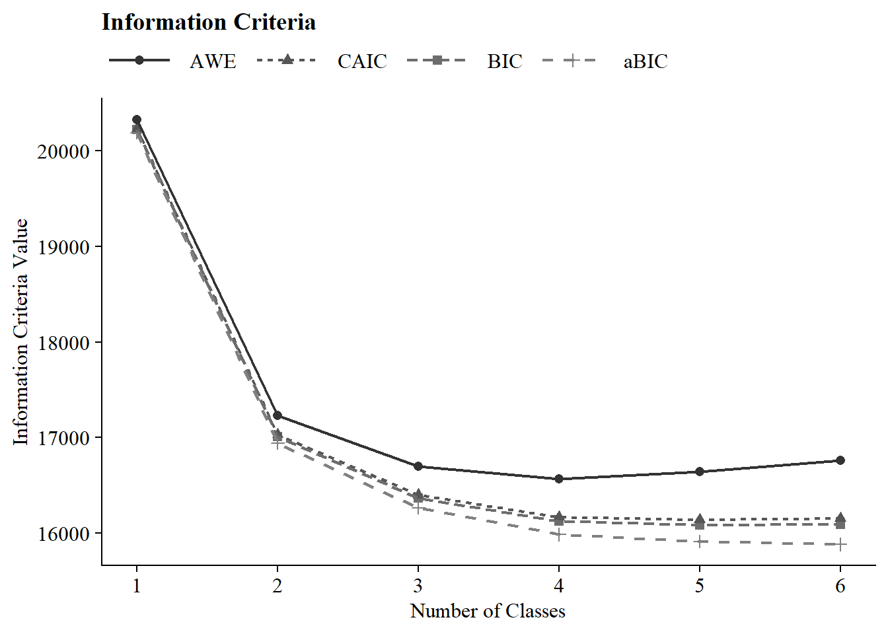
28.11.3 Time 3
# Define the directory where all of the .out files are located.
output_dir <- here("three_lta", "phase_1","t3")
# Get all .out files
output_files <- list.files(output_dir, pattern = "\\.out$", full.names = TRUE)
# Process all .out files into one dataframe
final_data <- map_dfr(output_files, extract_mplus_info_extended)
# Extract Sample_Size from final_data
sample_size <- unique(final_data$Sample_Size)
output_enum_t3 <- readModels(here("three_lta", "phase_1","t3"), quiet = TRUE)
fit_table_lca(output_enum_t3, final_data)| Model Fit Summary Table1 | |||||||||||
| Classes | Par | LL | % Converged | % Replicated |
Model Fit Indices
|
LRTs
|
Smallest Class
|
||||
|---|---|---|---|---|---|---|---|---|---|---|---|
| BIC | aBIC | CAIC | AWE | VLMR | BLRT | n (%) | |||||
| Class 1 Time 3 | 10 | −7,349.13 | 100% | 100% | 14,768.49 | 14,736.72 | 14,778.49 | 14,868.72 | – | – | 1122 (100%) |
| Class 2 Time 3 | 21 | −5,976.60 | 100% | 100% | 12,100.68 | 12,033.98 | 12,121.68 | 12,311.16 | <.001 | <.001 | 534 (47.5%) |
| Class 3 Time 3 | 32 | −5,670.60 | 98% | 99% | 11,565.92 | 11,464.28 | 11,597.92 | 11,886.65 | <.001 | <.001 | 203 (18.1%) |
| Class 4 Time 3 | 43 | −5,543.62 | 36% | 97% | 11,389.22 | 11,252.64 | 11,432.22 | 11,820.20 | 0.00 | <.001 | 219 (19.5%) |
| Class 5 Time 3 | 54 | −5,483.67 | 63% | 62% | 11,346.57 | 11,175.06 | 11,400.57 | 11,887.81 | 0.00 | <.001 | 131 (11.7%) |
| Class 6 Time 3 | 65 | −5,444.06 | 42% | 64% | 11,344.60 | 11,138.14 | 11,409.60 | 11,996.08 | 0.09 | <.001 | 81 (7.2%) |
| 1 Note. Par = Parameters; LL = model log likelihood; BIC = Bayesian information criterion; aBIC = sample size adjusted BIC; CAIC = consistent Akaike information criterion; AWE = approximate weight of evidence criterion; BLRT = bootstrapped likelihood ratio test p-value; VLMR = Vuong-Lo-Mendell-Rubin adjusted likelihood ratio test p-value; cmPk = approximate correct model probability. | |||||||||||
IC Plot
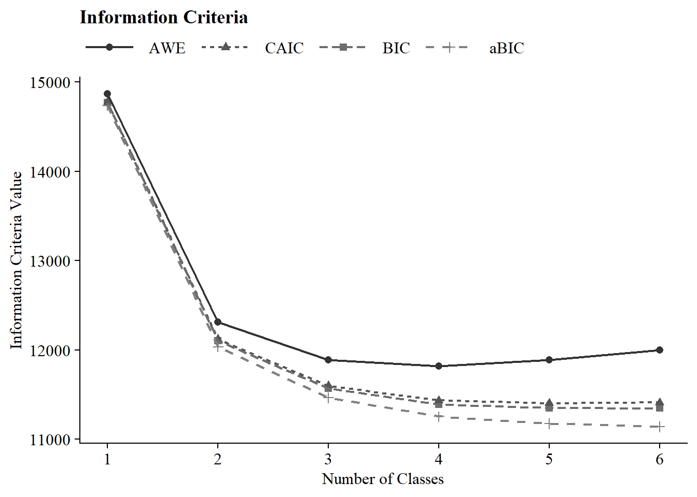
28.12 1.5 Plotting Class Probabilities
Plot LCA:
source(here("functions","plot_lca.R"))
step1_t1 <- readModels(here("three_lta", "phase_1","t1"))
step1_t2 <- readModels(here("three_lta", "phase_1","t2"))
step1_t3 <- readModels(here("three_lta", "phase_1","t3"))
t1 <- step1_t1$c4_lca_t1.out
t2 <- step1_t2$c4_lca_t2.out
t3 <- step1_t3$c4_lca_t3.out
(plot_lca(t1) | plot_lca(t2) | plot_lca(t3))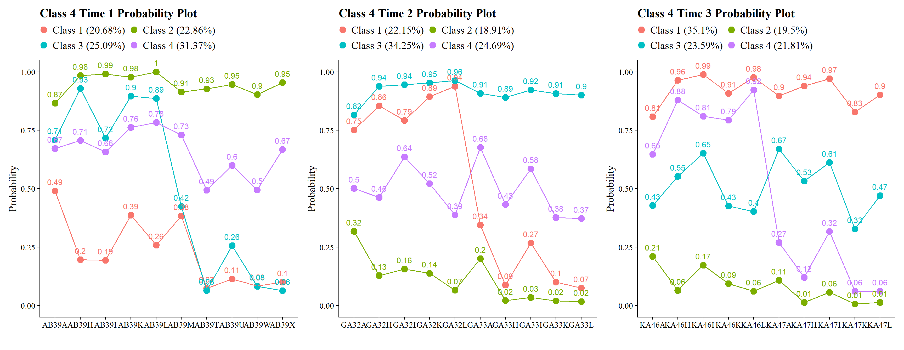
Class labels used here: Class 1: Very Positive, Class 2: Qualified Positive, Class 3: Neutral, Class 4: Less Positive
These diagnostics indicate that the same four-class structure is empirically recoverable across Grades 7, 10, and 12.
28.13 1.6 Estimate LCAs Independently at Each Time Point to Reorder Classes
In this step, the selected four-class solution is re-estimated independently at each wave with:
Fixed number of classes (four)
Optimized class ordering using
optseedSupplied
svalues()to enforce consistent class numbering across wavesRandom starts disabled (
starts = 0)
This step does not change the class structure. Its sole purpose is to ensure stable class labeling across waves prior to joint longitudinal modeling.
28.13.1 Time 1 (Reorder)
lca_t1 <- mplusObject(
TITLE = "Class-3_Time1",
VARIABLE =
"categorical = AB39A AB39H AB39I AB39K AB39L AB39M AB39T AB39U AB39W AB39X;
usevar = AB39A AB39H AB39I AB39K AB39L AB39M AB39T AB39U AB39W AB39X;
!useobs = patw2==0;
classes = c(4);",
ANALYSIS =
"estimator = mlr;
type = mixture;
starts = 0;
optseed = 937588;",
OUTPUT = "TECH1 TECH8 TECH14 svalues(2 3 4 1);",
usevariables = colnames(lsay_data),
rdata = lsay_data)
lca_t1_fit <- mplusModeler(lca_t1,
dataout=here("three_lta", "phase_1","reordered","t1_lca.dat"),
modelout=here("three_lta", "phase_1","reordered","t1_lca_step1.inp"),
check=TRUE, run = TRUE, hashfilename = FALSE)28.13.2 Time 2 (Reorder)
lca_t2 <- mplusObject(
TITLE = "Class-3_Time2",
VARIABLE =
"categorical = GA32A GA32H GA32I GA32K GA32L GA33A GA33H GA33I GA33K GA33L;
usevar = GA32A GA32H GA32I GA32K GA32L GA33A GA33H GA33I GA33K GA33L;
!useobs = patw4==0;
classes = c(4);",
ANALYSIS =
"estimator = mlr;
type = mixture;
starts = 0;
optseed = 264935;",
OUTPUT = "TECH1 TECH8 TECH14 svalues(3 1 4 2);",
usevariables = colnames(lsay_data),
rdata = lsay_data)
lca_t2_fit <- mplusModeler(lca_t2,
dataout=here("three_lta", "phase_1","reordered","t2_lca.dat"),
modelout=here("three_lta", "phase_1","reordered","t2_lca_step1.inp"),
check=TRUE, run = TRUE, hashfilename = FALSE)28.13.3 Time 3 (Reorder)
lca_t3 <- mplusObject(
TITLE = "Class-3_Time3",
VARIABLE =
"categorical = KA46A KA46H KA46I KA46K KA46L KA47A KA47H KA47I KA47K KA47L;
usevar = KA46A KA46H KA46I KA46K KA46L KA47A KA47H KA47I KA47K KA47L;
!useobs = patw6==0;
classes = c(4);",
ANALYSIS =
"estimator = mlr;
type = mixture;
starts = 0;
optseed = 366706;",
OUTPUT = "TECH1 TECH8 TECH14 svalues(1 4 3 2);",
usevariables = colnames(lsay_data),
rdata = lsay_data)
lca_t3_fit <- mplusModeler(lca_t3,
dataout=here("three_lta", "phase_1","reordered","t3_lca.dat"),
modelout=here("three_lta", "phase_1","reordered","t3_lca_step1.inp"),
check=TRUE, run = TRUE, hashfilename = FALSE)28.13.4 Diagnostic Class Plots (Post-Reordering)
source(here("functions","plot_lca.R"))
t1 <- readModels(here("three_lta", "phase_1","reordered","t1_lca_step1.out"))
t2 <- readModels(here("three_lta", "phase_1","reordered","t2_lca_step1.out"))
t3 <- readModels(here("three_lta", "phase_1","reordered","t3_lca_step1.out"))
(plot_lca(t1) | plot_lca(t2) | plot_lca(t3))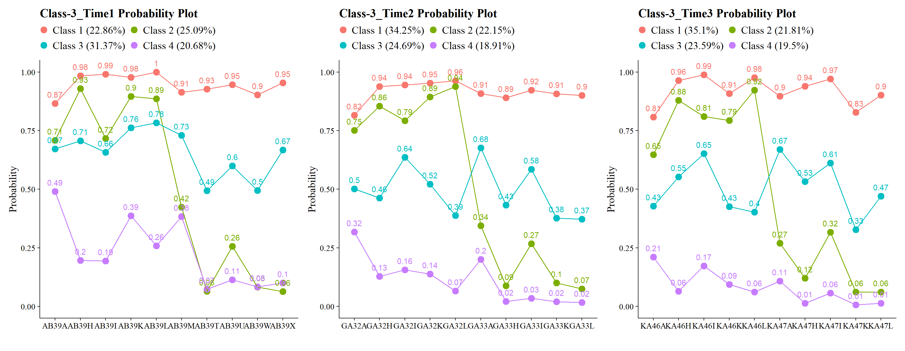
28.14 Phase 2: Testing for Measurement Invariance
28.14.1 Estimate the Non-Invariant Joint Configural Model (No Transitions)
lta_non_inv <- mplusObject(
TITLE =
"Non-Invariant LTA Model",
VARIABLE =
"idvariable=CASENUM;
usev =
AB39A AB39H AB39I AB39K AB39L AB39M AB39T AB39U AB39W AB39X
GA32A GA32H GA32I GA32K GA32L GA33A GA33H GA33I GA33K GA33L
KA46A KA46H KA46I KA46K KA46L KA47A KA47H KA47I KA47K KA47L;
categorical =
AB39A AB39H AB39I AB39K AB39L AB39M AB39T AB39U AB39W AB39X
GA32A GA32H GA32I GA32K GA32L GA33A GA33H GA33I GA33K GA33L
KA46A KA46H KA46I KA46K KA46L KA47A KA47H KA47I KA47K KA47L;
classes = c1(4) c2(4) c3(4);",
ANALYSIS =
"estimator = mlr;
type = mixture;
starts = 500 200;",
MODEL =
"%overall%
MODEL c1:
%c1#1%
[AB39A$1-AB39X$1];
%c1#2%
[AB39A$1-AB39X$1];
%c1#3%
[AB39A$1-AB39X$1];
%c1#4%
[AB39A$1-AB39X$1];
MODEL c2:
%c2#1%
[GA32A$1-GA33L$1];
%c2#2%
[GA32A$1-GA33L$1];
%c2#3%
[GA32A$1-GA33L$1];
%c2#4%
[GA32A$1-GA33L$1];
MODEL c3:
%c3#1%
[KA46A$1-KA47L$1];
%c3#2%
[KA46A$1-KA47L$1];
%c3#3%
[KA46A$1-KA47L$1];
%c3#4%
[KA46A$1-KA47L$1];",
OUTPUT = "svalues;",
usevariables = colnames(lsay_data),
rdata = lsay_data)
lta_non_inv_fit <- mplusModeler(lta_non_inv,
dataout=here("three_lta", "phase_2", "lta.dat"),
modelout=here("three_lta", "phase_2", "noninvariant_lta.inp"),
check=TRUE, run = TRUE, hashfilename = FALSE)After estimation, this model is retained strictly as the reference model for nested testing.
28.14.2 Estimate the Full Measurement-Invariance Model
lta_inv <- mplusObject(
TITLE =
"Invariant LTA Model",
VARIABLE =
"idvariable=CASENUM;
usev =
AB39A AB39H AB39I AB39K AB39L AB39M AB39T AB39U AB39W AB39X
GA32A GA32H GA32I GA32K GA32L GA33A GA33H GA33I GA33K GA33L
KA46A KA46H KA46I KA46K KA46L KA47A KA47H KA47I KA47K KA47L;
categorical =
AB39A AB39H AB39I AB39K AB39L AB39M AB39T AB39U AB39W AB39X
GA32A GA32H GA32I GA32K GA32L GA33A GA33H GA33I GA33K GA33L
KA46A KA46H KA46I KA46K KA46L KA47A KA47H KA47I KA47K KA47L;
classes = c1(4) c2(4) c3(4);",
ANALYSIS =
"estimator = mlr;
type = mixture;
starts = 0;
processors=10;",
MODEL =
"
%overall%
MODEL c1:
%c1#1%
[AB39A$1-AB39X$1](1-10);
%c1#2%
[AB39A$1-AB39X$1](11-20);
%c1#3%
[AB39A$1-AB39X$1](21-30);
%c1#4%
[AB39A$1-AB39X$1](31-40);
MODEL c2:
%c2#1%
[GA32A$1-GA33L$1](1-10);
%c2#2%
[GA32A$1-GA33L$1](11-20);
%c2#3%
[GA32A$1-GA33L$1](21-30);
%c2#4%
[GA32A$1-GA33L$1](31-40);
MODEL c3:
%c3#1%
[KA46A$1-KA47L$1](1-10);
%c3#2%
[KA46A$1-KA47L$1](11-20);
%c3#3%
[KA46A$1-KA47L$1](21-30);
%c3#4%
[KA46A$1-KA47L$1](31-40);",
OUTPUT = "svalues;",
usevariables = colnames(lsay_data),
rdata = lsay_data)
lta_inv_fit <- mplusModeler(lta_inv,
dataout=here("three_lta", "phase_2", "lta.dat"),
modelout=here("three_lta", "phase_2", "invariant_lta.inp"),
check=TRUE, run = TRUE, hashfilename = FALSE)This model yields the measurement structure used for all downstream auxiliary-variable analyses if invariance is retained.
28.14.3 Plotting the Non-Invariant and Invariant Models
source(here("functions","plot_lta.R"))
inv_mod <- readModels(here("three_lta", "phase_2"), quiet = TRUE)
plot_lta(inv_mod$invariant_lta.out)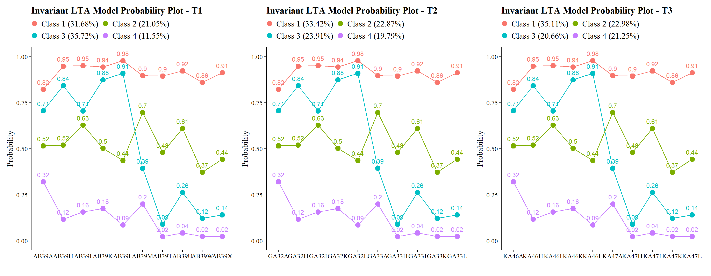
plot_lta(inv_mod$noninvariant_lta.out)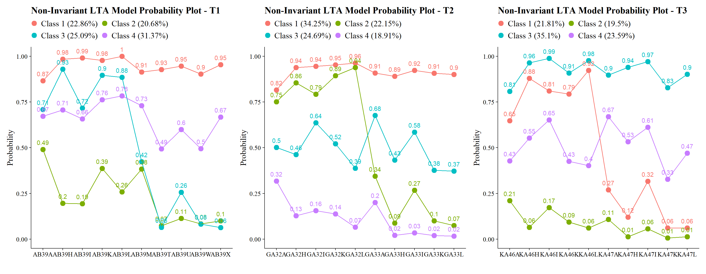
28.15 Nested Model Testing: Satorra–Bentler Scaled χ² Difference Test
# *0 = null or nested model & *1 = comparison or parent model
lta_models <- readModels(here("three_lta", "phase_2"), quiet = TRUE)
# Log Likelihood Values
L0 <- lta_models$invariant_lta.out$summaries$LL
L1 <- lta_models$noninvariant_lta.out$summaries$LL
# LRT equation
lr <- -2*(L0-L1)
# Parameters
p0 <- lta_models$invariant_lta.out$summaries$Parameters
p1 <- lta_models$noninvariant_lta.out$summaries$Parameters
# Scaling Correction Factors
c0 <- lta_models$invariant_lta.out$summaries$LLCorrectionFactor
c1 <- lta_models$noninvariant_lta.out$summaries$LLCorrectionFactor
# Difference Test Scaling correction
cd <- ((p0*c0)-(p1*c1))/(p0-p1)
# Chi-square difference test(TRd)
TRd <- (lr)/(cd)
# Degrees of freedom
df <- abs(p0 - p1)
# Significance test
(p_diff <- pchisq(TRd, df, lower.tail=FALSE))
#> [1] 2.294394e-40
28.16 Alternatively: Nested Model Testing Using compareModels in MplusAutomation
invisible(capture.output(
comparison <- compareModels(lta_models$invariant_lta.out, lta_models$noninvariant_lta.out, diffTest=TRUE)
))
# p-value
comparison$diffTest$MLR_LL$p
#> [1] 2.294394e-40
#BIC
comparison$summaries
#> Title Observations Estimator Parameters
#> 1 Invariant LTA Model 1907 MLR 49
#> 2 Non-Invariant LTA Model 1907 MLR 129
#> LL AIC BIC
#> 1 -23700.74 47499.48 47771.59
#> 2 -23492.12 47242.24 47958.6228.18 ML Three-Step Procedure
28.18.1 ML STEP 1: Re-Estimate
Time 1: Fixed-Threshold LCA With Saved CPROBS
inv_t1 <- mplusObject(
TITLE = "Time 1 - Invariant LCA",
VARIABLE =
"idvariable=CASENUM;
categorical = AB39A AB39H AB39I AB39K AB39L AB39M AB39T AB39U AB39W AB39X;
usevar = AB39A AB39H AB39I AB39K AB39L AB39M AB39T AB39U AB39W AB39X;
classes = c1(4);
auxiliary = MINORITY, FEMALE, MATHG7, MATHG10, MATHG12;",
ANALYSIS =
"estimator = mlr;
type = mixture;
starts = 0;",
MODEL =
"%overall%
%C1#1%
[ ab39a$1@-1.53313 ] (1);
[ ab39h$1@-2.90401 ] (2);
[ ab39i$1@-2.99575 ] (3);
[ ab39k$1@-2.83359 ] (4);
[ ab39l$1@-3.85594 ] (5);
[ ab39m$1@-2.16372 ] (6);
[ ab39t$1@-2.13876 ] (7);
[ ab39u$1@-2.48348 ] (8);
[ ab39w$1@-1.81515 ] (9);
[ ab39x$1@-2.35163 ] (10);
%C1#3%
[ ab39a$1@-0.06349 ] (11);
[ ab39h$1@-0.07976 ] (12);
[ ab39i$1@-0.52495 ] (13);
[ ab39k$1@-0.01216 ] (14);
[ ab39l$1@0.25484 ] (15);
[ ab39m$1@-0.83350 ] (16);
[ ab39t$1@0.07961 ] (17);
[ ab39u$1@-0.45274 ] (18);
[ ab39w$1@0.51840 ] (19);
[ ab39x$1@0.22569 ] (20);
%C1#2%
[ ab39a$1@-0.88292 ] (21);
[ ab39h$1@-1.67761 ] (22);
[ ab39i$1@-0.87642 ] (23);
[ ab39k$1@-1.94409 ] (24);
[ ab39l$1@-2.31259 ] (25);
[ ab39m$1@0.42887 ] (26);
[ ab39t$1@2.29606 ] (27);
[ ab39u$1@1.02908 ] (28);
[ ab39w$1@1.97179 ] (29);
[ ab39x$1@1.80988 ] (30);
%C1#4%
[ ab39a$1@0.74744 ] (31);
[ ab39h$1@2.01287 ] (32);
[ ab39i$1@1.67957 ] (33);
[ ab39k$1@1.54221 ] (34);
[ ab39l$1@2.34965 ] (35);
[ ab39m$1@1.38217 ] (36);
[ ab39t$1@3.73153 ] (37);
[ ab39u$1@3.09927 ] (38);
[ ab39w$1@3.69495 ] (39);
[ ab39x$1@3.68803 ] (40);",
OUTPUT = "TECH1 TECH8 TECH14;",
SAVEDATA =
"File=t1_inv_cprobs.dat;
Save=cprob;",
usevariables = colnames(lsay_data),
rdata = lsay_data)
inv_t1_fit <- mplusModeler(inv_t1,
dataout=here("three_lta", "phase_3","step_1_ml", "t1_inv.dat"),
modelout=here("three_lta", "phase_3","step_1_ml", "t1_inv_lca.inp"),
check=TRUE, run = TRUE, hashfilename = FALSE)Time 2: Fixed-Threshold LCA With Saved CPROBS
inv_t2 <- mplusObject(
TITLE = "Time 2 - Invariant LCA",
VARIABLE =
"idvariable=CASENUM;
categorical = GA32A GA32H GA32I GA32K GA32L GA33A GA33H GA33I GA33K GA33L;
usevar = GA32A GA32H GA32I GA32K GA32L GA33A GA33H GA33I GA33K GA33L;
classes = c2(4);
auxiliary = MINORITY, FEMALE, MATHG7, MATHG10, MATHG12;",
ANALYSIS =
"estimator = mlr;
type = mixture;
starts = 0;",
MODEL =
"%overall%
%C2#1%
[ ga32a$1@-1.53313 ] (1);
[ ga32h$1@-2.90401 ] (2);
[ ga32i$1@-2.99575 ] (3);
[ ga32k$1@-2.83359 ] (4);
[ ga32l$1@-3.85594 ] (5);
[ ga33a$1@-2.16372 ] (6);
[ ga33h$1@-2.13876 ] (7);
[ ga33i$1@-2.48348 ] (8);
[ ga33k$1@-1.81515 ] (9);
[ ga33l$1@-2.35163 ] (10);
%C2#3%
[ ga32a$1@-0.06349 ] (11);
[ ga32h$1@-0.07976 ] (12);
[ ga32i$1@-0.52495 ] (13);
[ ga32k$1@-0.01216 ] (14);
[ ga32l$1@0.25484 ] (15);
[ ga33a$1@-0.83350 ] (16);
[ ga33h$1@0.07961 ] (17);
[ ga33i$1@-0.45274 ] (18);
[ ga33k$1@0.51840 ] (19);
[ ga33l$1@0.22569 ] (20);
%C2#2%
[ ga32a$1@-0.88292 ] (21);
[ ga32h$1@-1.67761 ] (22);
[ ga32i$1@-0.87642 ] (23);
[ ga32k$1@-1.94409 ] (24);
[ ga32l$1@-2.31259 ] (25);
[ ga33a$1@0.42887 ] (26);
[ ga33h$1@2.29606 ] (27);
[ ga33i$1@1.02908 ] (28);
[ ga33k$1@1.97179 ] (29);
[ ga33l$1@1.80988 ] (30);
%C2#4%
[ ga32a$1@0.74744 ] (31);
[ ga32h$1@2.01287 ] (32);
[ ga32i$1@1.67957 ] (33);
[ ga32k$1@1.54221 ] (34);
[ ga32l$1@2.34965 ] (35);
[ ga33a$1@1.38217 ] (36);
[ ga33h$1@3.73153 ] (37);
[ ga33i$1@3.09927 ] (38);
[ ga33k$1@3.69495 ] (39);
[ ga33l$1@3.68803 ] (40);
",
OUTPUT = "TECH1 TECH8 TECH14;",
SAVEDATA =
"File=t2_inv_cprobs.dat;
Save=cprob;",
usevariables = colnames(lsay_data),
rdata = lsay_data)
inv_t2_fit <- mplusModeler(inv_t2,
dataout=here("three_lta", "phase_3","step_1_ml", "t2_inv.dat"),
modelout=here("three_lta", "phase_3","step_1_ml", "t2_inv_lca.inp"),
check=TRUE, run = TRUE, hashfilename = FALSE)Time 3: Fixed-Threshold LCA With Saved CPROBS
inv_t3 <- mplusObject(
TITLE = "Time 3 - Invariant LCA",
VARIABLE =
"idvariable=CASENUM;
categorical = KA46A KA46H KA46I KA46K KA46L KA47A KA47H KA47I KA47K KA47L;
usevar = KA46A KA46H KA46I KA46K KA46L KA47A KA47H KA47I KA47K KA47L;
classes = c3(4);
auxiliary = MINORITY, FEMALE, MATHG7, MATHG10, MATHG12;",
ANALYSIS =
"estimator = mlr;
type = mixture;
starts = 0; ",
MODEL =
"%overall%
%C3#1%
[ ka46a$1@-1.53313 ] (1);
[ ka46h$1@-2.90401 ] (2);
[ ka46i$1@-2.99575 ] (3);
[ ka46k$1@-2.83359 ] (4);
[ ka46l$1@-3.85594 ] (5);
[ ka47a$1@-2.16372 ] (6);
[ ka47h$1@-2.13876 ] (7);
[ ka47i$1@-2.48348 ] (8);
[ ka47k$1@-1.81515 ] (9);
[ ka47l$1@-2.35163 ] (10);
%C3#2%
[ ka46a$1@-0.06349 ] (11);
[ ka46h$1@-0.07976 ] (12);
[ ka46i$1@-0.52495 ] (13);
[ ka46k$1@-0.01216 ] (14);
[ ka46l$1@0.25484 ] (15);
[ ka47a$1@-0.83350 ] (16);
[ ka47h$1@0.07961 ] (17);
[ ka47i$1@-0.45274 ] (18);
[ ka47k$1@0.51840 ] (19);
[ ka47l$1@0.22569 ] (20);
%C3#3%
[ ka46a$1@-0.88292 ] (21);
[ ka46h$1@-1.67761 ] (22);
[ ka46i$1@-0.87642 ] (23);
[ ka46k$1@-1.94409 ] (24);
[ ka46l$1@-2.31259 ] (25);
[ ka47a$1@0.42887 ] (26);
[ ka47h$1@2.29606 ] (27);
[ ka47i$1@1.02908 ] (28);
[ ka47k$1@1.97179 ] (29);
[ ka47l$1@1.80988 ] (30);
%C3#4%
[ ka46a$1@0.74744 ] (31);
[ ka46h$1@2.01287 ] (32);
[ ka46i$1@1.67957 ] (33);
[ ka46k$1@1.54221 ] (34);
[ ka46l$1@2.34965 ] (35);
[ ka47a$1@1.38217 ] (36);
[ ka47h$1@3.73153 ] (37);
[ ka47i$1@3.09927 ] (38);
[ ka47k$1@3.69495 ] (39);
[ ka47l$1@3.68803 ] (40);",
OUTPUT = "TECH1 TECH8 TECH14;",
SAVEDATA =
"File=t3_inv_cprobs.dat;
Save=cprob;",
usevariables = colnames(lsay_data),
rdata = lsay_data)
inv_t3_fit <- mplusModeler(inv_t3,
dataout=here("three_lta", "phase_3","step_1_ml", "t3_inv.dat"),
modelout=here("three_lta", "phase_3","step_1_ml", "t3_inv_lca.inp"),
check=TRUE, run = TRUE, hashfilename = FALSE)28.18.1.1 Plotting the Fixed-Threshold LCAs
source(here("functions","plot_lca.R"))
t1 <- readModels(here("three_lta", "phase_3","step_1_ml","t1_inv_lca.out"))
t2 <- readModels(here("three_lta", "phase_3","step_1_ml","t2_inv_lca.out"))
t3 <- readModels(here("three_lta", "phase_3","step_1_ml","t3_inv_lca.out"))
(plot_lca(t1) | plot_lca(t2) | plot_lca(t3))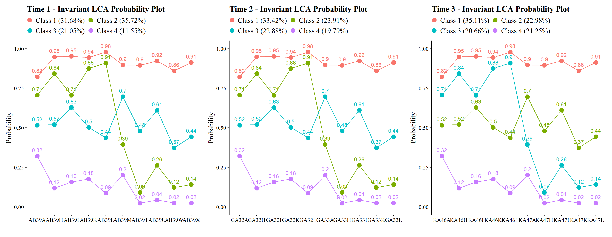
28.18.2 ML STEP 2: Extract Logits and Merge Saved Posterior Data
Extract Classification-Error Logits
inv_step4 <- readModels(here("three_lta", "phase_3","step_1_ml"), quiet = TRUE)
logits_t1 <- as.data.frame(inv_step4$t1_inv_lca.out$class_counts$logitProbs.mostLikely)
logits_t2 <- as.data.frame(inv_step4$t2_inv_lca.out$class_counts$logitProbs.mostLikely)
logits_t3 <- as.data.frame(inv_step4$t3_inv_lca.out$class_counts$logitProbs.mostLikely)Extract and Merge Saved Posterior Probabilities
savedata_t1 <- as.data.frame(inv_step4$t1_inv_lca.out$savedata) %>%
rename(cprob11=CPROB1,cprob12=CPROB2,cprob13=CPROB3,cprob14=CPROB4,n1=MLCC1)
savedata_t2 <- as.data.frame(inv_step4$t2_inv_lca.out$savedata) %>%
rename(cprob21=CPROB1,cprob22=CPROB2,cprob23=CPROB3,cprob24=CPROB4,n2=MLCC2)
savedata_t3 <- as.data.frame(inv_step4$t3_inv_lca.out$savedata) %>%
rename(cprob31=CPROB1,cprob32=CPROB2,cprob33=CPROB3,cprob34=CPROB4,n3=MLCC3)
savedata_t123 <- savedata_t1 %>%
full_join(savedata_t2, by = "CASENUM") %>%
full_join(savedata_t3, by = "CASENUM") %>%
clean_names() %>% relocate(casenum)
summary(savedata_t123)
#> casenum ab39a ab39h
#> Min. :1004 Min. :0.0000 Min. :0.0000
#> 1st Qu.:2500 1st Qu.:0.0000 1st Qu.:0.0000
#> Median :3973 Median :1.0000 Median :1.0000
#> Mean :3991 Mean :0.6881 Mean :0.7218
#> 3rd Qu.:5505 3rd Qu.:1.0000 3rd Qu.:1.0000
#> Max. :6937 Max. :1.0000 Max. :1.0000
#> NA's :25 NA's :56
#> ab39i ab39k ab39l
#> Min. :0.000 Min. :0.0000 Min. :0.0000
#> 1st Qu.:0.000 1st Qu.:1.0000 1st Qu.:1.0000
#> Median :1.000 Median :1.0000 Median :1.0000
#> Mean :0.653 Mean :0.7681 Mean :0.7512
#> 3rd Qu.:1.000 3rd Qu.:1.0000 3rd Qu.:1.0000
#> Max. :1.000 Max. :1.0000 Max. :1.0000
#> NA's :60 NA's :53 NA's :50
#> ab39m ab39t ab39u
#> Min. :0.0000 Min. :0.0000 Min. :0.0000
#> 1st Qu.:0.0000 1st Qu.:0.0000 1st Qu.:0.0000
#> Median :1.0000 Median :0.0000 Median :0.0000
#> Mean :0.6236 Mean :0.3984 Mean :0.4924
#> 3rd Qu.:1.0000 3rd Qu.:1.0000 3rd Qu.:1.0000
#> Max. :1.0000 Max. :1.0000 Max. :1.0000
#> NA's :34 NA's :67 NA's :57
#> ab39w ab39x minority_x
#> Min. :0.0000 Min. :0.0000 Min. :0.0000
#> 1st Qu.:0.0000 1st Qu.:0.0000 1st Qu.:0.0000
#> Median :0.0000 Median :0.0000 Median :0.0000
#> Mean :0.3996 Mean :0.4645 Mean :0.1704
#> 3rd Qu.:1.0000 3rd Qu.:1.0000 3rd Qu.:0.0000
#> Max. :1.0000 Max. :1.0000 Max. :1.0000
#> NA's :50 NA's :34 NA's :105
#> female_x mathg7_x mathg10_x
#> Min. :0.0000 Min. :28.93 Min. :30.63
#> 1st Qu.:0.0000 1st Qu.:44.84 1st Qu.:58.58
#> Median :1.0000 Median :53.09 Median :67.71
#> Mean :0.5175 Mean :52.58 Mean :66.15
#> 3rd Qu.:1.0000 3rd Qu.:59.86 3rd Qu.:75.27
#> Max. :1.0000 Max. :85.07 Max. :95.26
#> NA's :21 NA's :42 NA's :532
#> mathg12_x cprob11 cprob12
#> Min. :27.01 Min. :0.0000 Min. :0.0000
#> 1st Qu.:63.40 1st Qu.:0.0000 1st Qu.:0.0030
#> Median :72.19 Median :0.0080 Median :0.1405
#> Mean :71.20 Mean :0.3169 Mean :0.3572
#> 3rd Qu.:81.42 3rd Qu.:0.8530 3rd Qu.:0.8210
#> Max. :99.30 Max. :0.9980 Max. :0.9950
#> NA's :1085 NA's :21 NA's :21
#> cprob13 cprob14 n1
#> Min. :0.0020 Min. :0.0000 Min. :1.000
#> 1st Qu.:0.0090 1st Qu.:0.0000 1st Qu.:1.000
#> Median :0.0640 Median :0.0000 Median :2.000
#> Mean :0.2105 Mean :0.1155 Mean :2.093
#> 3rd Qu.:0.2752 3rd Qu.:0.0130 3rd Qu.:3.000
#> Max. :0.9990 Max. :0.9960 Max. :4.000
#> NA's :21 NA's :21 NA's :21
#> ga32a ga32h ga32i
#> Min. :0.0000 Min. :0.0000 Min. :0.0000
#> 1st Qu.:0.0000 1st Qu.:0.0000 1st Qu.:0.0000
#> Median :1.0000 Median :1.0000 Median :1.0000
#> Mean :0.6299 Mean :0.6493 Mean :0.6862
#> 3rd Qu.:1.0000 3rd Qu.:1.0000 3rd Qu.:1.0000
#> Max. :1.0000 Max. :1.0000 Max. :1.0000
#> NA's :375 NA's :387 NA's :390
#> ga32k ga32l ga33a
#> Min. :0.000 Min. :0.0000 Min. :0.0000
#> 1st Qu.:0.000 1st Qu.:0.0000 1st Qu.:0.0000
#> Median :1.000 Median :1.0000 Median :1.0000
#> Mean :0.679 Mean :0.6466 Mean :0.5917
#> 3rd Qu.:1.000 3rd Qu.:1.0000 3rd Qu.:1.0000
#> Max. :1.000 Max. :1.0000 Max. :1.0000
#> NA's :390 NA's :382 NA's :381
#> ga33h ga33i ga33k
#> Min. :0.0000 Min. :0.0000 Min. :0.0000
#> 1st Qu.:0.0000 1st Qu.:0.0000 1st Qu.:0.0000
#> Median :0.0000 Median :1.0000 Median :0.0000
#> Mean :0.4347 Mean :0.5251 Mean :0.4289
#> 3rd Qu.:1.0000 3rd Qu.:1.0000 3rd Qu.:1.0000
#> Max. :1.0000 Max. :1.0000 Max. :1.0000
#> NA's :391 NA's :391 NA's :389
#> ga33l minority_y female_y
#> Min. :0.0000 Min. :0.0000 Min. :0.0000
#> 1st Qu.:0.0000 1st Qu.:0.0000 1st Qu.:0.0000
#> Median :0.0000 Median :0.0000 Median :1.0000
#> Mean :0.4199 Mean :0.1632 Mean :0.5254
#> 3rd Qu.:1.0000 3rd Qu.:0.0000 3rd Qu.:1.0000
#> Max. :1.0000 Max. :1.0000 Max. :1.0000
#> NA's :383 NA's :430 NA's :373
#> mathg7_y mathg10_y mathg12_y
#> Min. :28.93 Min. :30.63 Min. :27.01
#> 1st Qu.:46.10 1st Qu.:59.09 1st Qu.:64.00
#> Median :53.57 Median :67.86 Median :72.56
#> Mean :53.20 Mean :66.41 Mean :71.63
#> 3rd Qu.:60.09 3rd Qu.:75.30 3rd Qu.:81.73
#> Max. :85.07 Max. :95.26 Max. :99.30
#> NA's :390 NA's :557 NA's :1128
#> cprob21 cprob22 cprob23
#> Min. :0.0000 Min. :0.0000 Min. :0.0020
#> 1st Qu.:0.0000 1st Qu.:0.0000 1st Qu.:0.0055
#> Median :0.0035 Median :0.0110 Median :0.0430
#> Mean :0.3343 Mean :0.2391 Mean :0.2287
#> 3rd Qu.:0.9640 3rd Qu.:0.4000 3rd Qu.:0.3210
#> Max. :0.9980 Max. :0.9920 Max. :0.9990
#> NA's :373 NA's :373 NA's :373
#> cprob24 n2 ka46a
#> Min. :0.0000 Min. :1.000 Min. :0.000
#> 1st Qu.:0.0000 1st Qu.:1.000 1st Qu.:0.000
#> Median :0.0000 Median :2.000 Median :1.000
#> Mean :0.1979 Mean :2.275 Mean :0.567
#> 3rd Qu.:0.1230 3rd Qu.:3.000 3rd Qu.:1.000
#> Max. :0.9980 Max. :4.000 Max. :1.000
#> NA's :373 NA's :373 NA's :787
#> ka46h ka46i ka46k
#> Min. :0.0000 Min. :0.0000 Min. :0.0000
#> 1st Qu.:0.0000 1st Qu.:0.0000 1st Qu.:0.0000
#> Median :1.0000 Median :1.0000 Median :1.0000
#> Mean :0.6733 Mean :0.7121 Mean :0.6109
#> 3rd Qu.:1.0000 3rd Qu.:1.0000 3rd Qu.:1.0000
#> Max. :1.0000 Max. :1.0000 Max. :1.0000
#> NA's :796 NA's :799 NA's :802
#> ka46l ka47a ka47h
#> Min. :0.0000 Min. :0.000 Min. :0.000
#> 1st Qu.:0.0000 1st Qu.:0.000 1st Qu.:0.000
#> Median :1.0000 Median :1.000 Median :0.000
#> Mean :0.6513 Mean :0.552 Mean :0.485
#> 3rd Qu.:1.0000 3rd Qu.:1.000 3rd Qu.:1.000
#> Max. :1.0000 Max. :1.000 Max. :1.000
#> NA's :803 NA's :802 NA's :808
#> ka47i ka47k ka47l
#> Min. :0.0000 Min. :0.0000 Min. :0.0000
#> 1st Qu.:0.0000 1st Qu.:0.0000 1st Qu.:0.0000
#> Median :1.0000 Median :0.0000 Median :0.0000
#> Mean :0.5645 Mean :0.3831 Mean :0.4433
#> 3rd Qu.:1.0000 3rd Qu.:1.0000 3rd Qu.:1.0000
#> Max. :1.0000 Max. :1.0000 Max. :1.0000
#> NA's :807 NA's :808 NA's :804
#> minority female mathg7
#> Min. :0.0000 Min. :0.0000 Min. :28.93
#> 1st Qu.:0.0000 1st Qu.:0.0000 1st Qu.:47.05
#> Median :0.0000 Median :1.0000 Median :54.23
#> Mean :0.1513 Mean :0.5169 Mean :54.05
#> 3rd Qu.:0.0000 3rd Qu.:1.0000 3rd Qu.:60.80
#> Max. :1.0000 Max. :1.0000 Max. :85.07
#> NA's :823 NA's :785 NA's :793
#> mathg10 mathg12 cprob31
#> Min. :30.63 Min. :27.01 Min. :0.0000
#> 1st Qu.:60.66 1st Qu.:63.95 1st Qu.:0.0000
#> Median :68.83 Median :72.31 Median :0.0060
#> Mean :67.49 Mean :71.59 Mean :0.3511
#> 3rd Qu.:76.10 3rd Qu.:81.66 3rd Qu.:0.9650
#> Max. :95.26 Max. :99.30 Max. :0.9980
#> NA's :955 NA's :1137 NA's :785
#> cprob32 cprob33 cprob34
#> Min. :0.0020 Min. :0.0000 Min. :0.0000
#> 1st Qu.:0.0020 1st Qu.:0.0000 1st Qu.:0.0000
#> Median :0.0400 Median :0.0060 Median :0.0000
#> Mean :0.2298 Mean :0.2066 Mean :0.2125
#> 3rd Qu.:0.3095 3rd Qu.:0.2480 3rd Qu.:0.2005
#> Max. :0.9990 Max. :0.9910 Max. :0.9980
#> NA's :785 NA's :785 NA's :785
#> n3
#> Min. :1.000
#> 1st Qu.:1.000
#> Median :2.000
#> Mean :2.291
#> 3rd Qu.:3.000
#> Max. :4.000
#> NA's :785
#describe(savedata_t123)28.18.3 ML STEP 3a: Estimate the Unconditional LTA Model With Fixed Logits
unc_LTA <- mplusObject(
TITLE = "Step3a of 3-step",
VARIABLE =
"idvariable =casenum;
nominal=n1 n2 n3;
usevar = n1 n2 n3;
classes = c1(4) c2(4) c3(4);
auxiliary = MINORITY, FEMALE, MATHG7, MATHG10, MATHG12;",
ANALYSIS =
"estimator = mlr;
type = mixture;
starts = 0;",
MODEL = glue(
"%overall%
c2 on c1;
c3 on c2;
Model c1:
%c1#1%
[n1#1@{logits_t1[1,1]}];
[n1#2@{logits_t1[1,2]}];
[n1#3@{logits_t1[1,3]}];
%c1#2%
[n1#1@{logits_t1[2,1]}];
[n1#2@{logits_t1[2,2]}];
[n1#3@{logits_t1[2,3]}];
%c1#3%
[n1#1@{logits_t1[3,1]}];
[n1#2@{logits_t1[3,2]}];
[n1#3@{logits_t1[3,3]}];
%c1#4%
[n1#1@{logits_t1[4,1]}];
[n1#2@{logits_t1[4,2]}];
[n1#3@{logits_t1[4,3]}];
Model c2:
%c2#1%
[n2#1@{logits_t2[1,1]}];
[n2#2@{logits_t2[1,2]}];
[n2#3@{logits_t2[1,3]}];
%c2#2%
[n2#1@{logits_t2[2,1]}];
[n2#2@{logits_t2[2,2]}];
[n2#3@{logits_t2[2,3]}];
%c2#3%
[n2#1@{logits_t2[3,1]}];
[n2#2@{logits_t2[3,2]}];
[n2#3@{logits_t2[3,3]}];
%c2#4%
[n2#1@{logits_t2[4,1]}];
[n2#2@{logits_t2[4,2]}];
[n2#3@{logits_t2[4,3]}];
Model c3:
%c3#1%
[n3#1@{logits_t3[1,1]}];
[n3#2@{logits_t3[1,2]}];
[n3#3@{logits_t3[1,3]}];
%c3#2%
[n3#1@{logits_t3[2,1]}];
[n3#2@{logits_t3[2,2]}];
[n3#3@{logits_t3[2,3]}];
%c3#3%
[n3#1@{logits_t3[3,1]}];
[n3#2@{logits_t3[3,2]}];
[n3#3@{logits_t3[3,3]}];
%c3#4%
[n3#1@{logits_t3[4,1]}];
[n3#2@{logits_t3[4,2]}];
[n3#3@{logits_t3[4,3]}];"),
OUTPUT = "svalues;",
usevariables = colnames(savedata_t123),
rdata = savedata_t123)
unc_LTA_fit <- mplusModeler(unc_LTA,
dataout=here("three_lta", "phase_3","step_3a_ml", "t123_LTA.dat"),
modelout=here("three_lta", "phase_3","step_3a_ml", "unconditional_LTA.inp"),
check=TRUE, run = TRUE, hashfilename = FALSE)28.18.3.1 Plotting Transition Probabilities (Unconditional Model)
source(here("functions","plot_transition.R"))
lta_model <- readModels(here("three_lta", "phase_3","step_3a_ml", "unconditional_LTA.out"))
plot_transition(
model_name = lta_model,
facet_labels = c(`1` = "Very Positive", `2` = "Qualified Positive", `3` = "Neutral", `4` = "Less Positive"),
timepoint_labels = c(`1` = "Grade 7", `2` = "Grade 10", `3` = "Grade 12"),
class_labels = c(`1` = "Very Positive", `2` = "Qualified Positive", `3` = "Neutral", `4` = "Less Positive")
) +
labs(title = "Unconditional LTA (ML Three-Step Method)")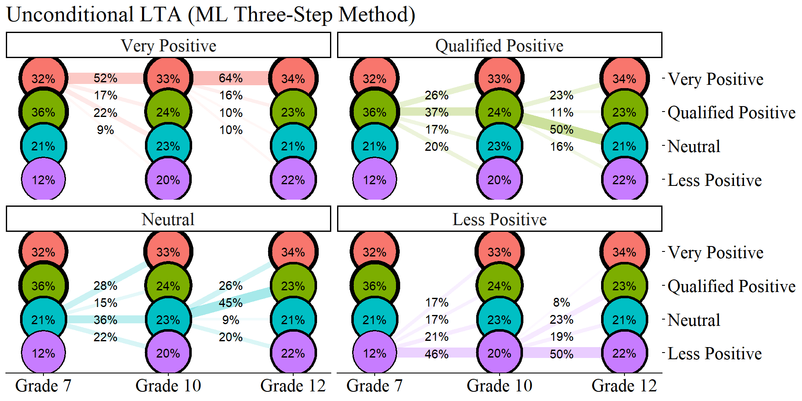
ggsave(here("figures", "unconditional_lta_ml.jpeg"), dpi="retina", height = 6, width = 10, bg = "white", units="in")28.18.4 ML STEP 3b: Estimate the Covariate-Adjusted LTA Model With Fixed Logits
con_LTA <- mplusObject(
TITLE = "Step4b of 3-step",
VARIABLE =
"idvariable =casenum;
nominal=n1 n2 n3;
usevar = n1 n2 n3;
classes = c1(4) c2(4) c3(4);
usevar = MINORITY, FEMALE;",
ANALYSIS =
"estimator = mlr;
type = mixture;
starts = 0;",
MODEL = glue(
"%overall%
c1 ON MINORITY Female;
c2 ON c1 MINORITY Female;
c3 ON c2 MINORITY Female;
Model c1:
%c1#1%
[n1#1@{logits_t1[1,1]}];
[n1#2@{logits_t1[1,2]}];
[n1#3@{logits_t1[1,3]}];
%c1#2%
[n1#1@{logits_t1[2,1]}];
[n1#2@{logits_t1[2,2]}];
[n1#3@{logits_t1[2,3]}];
%c1#3%
[n1#1@{logits_t1[3,1]}];
[n1#2@{logits_t1[3,2]}];
[n1#3@{logits_t1[3,3]}];
%c1#4%
[n1#1@{logits_t1[4,1]}];
[n1#2@{logits_t1[4,2]}];
[n1#3@{logits_t1[4,3]}];
Model c2:
%c2#1%
[n2#1@{logits_t2[1,1]}];
[n2#2@{logits_t2[1,2]}];
[n2#3@{logits_t2[1,3]}];
%c2#2%
[n2#1@{logits_t2[2,1]}];
[n2#2@{logits_t2[2,2]}];
[n2#3@{logits_t2[2,3]}];
%c2#3%
[n2#1@{logits_t2[3,1]}];
[n2#2@{logits_t2[3,2]}];
[n2#3@{logits_t2[3,3]}];
%c2#4%
[n2#1@{logits_t2[4,1]}];
[n2#2@{logits_t2[4,2]}];
[n2#3@{logits_t2[4,3]}];
Model c3:
%c3#1%
[n3#1@{logits_t3[1,1]}];
[n3#2@{logits_t3[1,2]}];
[n3#3@{logits_t3[1,3]}];
%c3#2%
[n3#1@{logits_t3[2,1]}];
[n3#2@{logits_t3[2,2]}];
[n3#3@{logits_t3[2,3]}];
%c3#3%
[n3#1@{logits_t3[3,1]}];
[n3#2@{logits_t3[3,2]}];
[n3#3@{logits_t3[3,3]}];
%c3#4%
[n3#1@{logits_t3[4,1]}];
[n3#2@{logits_t3[4,2]}];
[n3#3@{logits_t3[4,3]}];"),
OUTPUT = "svalues;",
usevariables = colnames(savedata_t123),
rdata = savedata_t123)
con_LTA_fit <- mplusModeler(con_LTA,
dataout=here("three_lta", "phase_3","step_3b_ml", "t123_LTA.dat"),
modelout=here("three_lta", "phase_3","step_3b_ml", "LTA_covariates.inp"),
check=TRUE, run = TRUE, hashfilename = FALSE)28.18.4.1 Covariate Effects Table
lta_cov_model <- readModels(here("three_lta", "phase_3","step_3b_ml", "LTA_covariates.out"))
# REFERENCE CLASS 4
cov <- as.data.frame(lta_cov_model[["parameters"]][["unstandardized"]]) %>%
filter(param %in% c("MINORITY", "FEMALE")) %>%
mutate(param = case_when(
param == "FEMALE" ~ "Gender",
param == "MINORITY" ~ "URM"),
se = paste0("(", format(round(se,2), nsmall =2), ")")) %>%
separate(paramHeader, into = c("Time", "Class"), sep = "#") %>%
mutate(Class = case_when(
Class == "1.ON" ~ "Very Positive",
Class == "2.ON" ~ "Qualified Positive",
Class == "3.ON" ~ "Neutral"),
Time = case_when(
Time == "C1" ~ "7th Grade (T1)",
Time == "C2" ~ "10th Grade (T2)",
Time == "C3" ~ "12th Grade (T3)",
)
) %>%
unite(estimate, est, se, sep = " ") %>%
select(Time:pval, -est_se) %>%
mutate(pval = ifelse(pval<0.001, paste0("<.001*"),
ifelse(pval<0.05, paste0(scales::number(pval, accuracy = .001), "*"),
scales::number(pval, accuracy = .001))))
# Create table
cov_m1 <- cov %>%
group_by(param, Class) %>%
gt() %>%
tab_header(
title = "Relations Between the Covariates and Latent Class (ML Three-Step Method)") %>%
tab_footnote(
footnote = md(
"Reference Group: Less Positive"
),
locations = cells_title()
) %>%
cols_label(
param = md("Covariate"),
estimate = md("Estimate (*se*)"),
pval = md("*p*-value")) %>%
sub_missing(1:3,
missing_text = "") %>%
sub_values(values = c(999.000), replacement = "-") %>%
cols_align(align = "center") %>%
opt_align_table_header(align = "left") %>%
gt::tab_options(table.font.names = "serif")
cov_m1| Relations Between the Covariates and Latent Class (ML Three-Step Method)1 | ||
| Time | Estimate (se) | p-value |
|---|---|---|
| URM - Very Positive | ||
| 7th Grade (T1) | 0.295 (0.40) | 0.459 |
| 10th Grade (T2) | 0.169 (0.33) | 0.611 |
| 12th Grade (T3) | 0.403 (0.37) | 0.273 |
| Gender - Very Positive | ||
| 7th Grade (T1) | -0.398 (0.28) | 0.150 |
| 10th Grade (T2) | -0.124 (0.22) | 0.580 |
| 12th Grade (T3) | 0.155 (0.22) | 0.482 |
| URM - Qualified Positive | ||
| 7th Grade (T1) | -0.174 (0.43) | 0.683 |
| 10th Grade (T2) | 0.429 (0.34) | 0.208 |
| 12th Grade (T3) | 0.818 (0.39) | 0.034* |
| Gender - Qualified Positive | ||
| 7th Grade (T1) | 0.252 (0.29) | 0.380 |
| 10th Grade (T2) | 0.22 (0.25) | 0.379 |
| 12th Grade (T3) | 0.414 (0.26) | 0.105 |
| URM - Neutral | ||
| 7th Grade (T1) | 0.509 (0.47) | 0.279 |
| 10th Grade (T2) | 0.164 (0.39) | 0.673 |
| 12th Grade (T3) | 1.123 (0.40) | 0.005* |
| Gender - Neutral | ||
| 7th Grade (T1) | -0.228 (0.34) | 0.508 |
| 10th Grade (T2) | -0.195 (0.27) | 0.472 |
| 12th Grade (T3) | 0.641 (0.26) | 0.015* |
| 1 Reference Group: Less Positive | ||
28.19 BCH Method
Apply BCH Training Weights for Classification-Error Correction
28.19.1 BCH Step 1: Estimate the Invariant LTA Model and Compute BCH Training Weights
step1_bch <- mplusObject(
TITLE = "Step 1 - BCH Method",
VARIABLE =
"idvariable=CASENUM;
usev =
AB39A AB39H AB39I AB39K AB39L AB39M AB39T AB39U AB39W AB39X
GA32A GA32H GA32I GA32K GA32L GA33A GA33H GA33I GA33K GA33L
KA46A KA46H KA46I KA46K KA46L KA47A KA47H KA47I KA47K KA47L;
categorical =
AB39A AB39H AB39I AB39K AB39L AB39M AB39T AB39U AB39W AB39X
GA32A GA32H GA32I GA32K GA32L GA33A GA33H GA33I GA33K GA33L
KA46A KA46H KA46I KA46K KA46L KA47A KA47H KA47I KA47K KA47L;
classes = c1(4) c2(4) c3(4);
auxiliary = MINORITY, FEMALE, MATHG7, MATHG10, MATHG12;",
ANALYSIS =
"estimator = mlr;
type = mixture;
starts = 0;",
MODEL =
"%overall%
MODEL C1:
%C1#1%
[ ab39a$1@-1.53313 ] (1);
[ ab39h$1@-2.90401 ] (2);
[ ab39i$1@-2.99575 ] (3);
[ ab39k$1@-2.83359 ] (4);
[ ab39l$1@-3.85594 ] (5);
[ ab39m$1@-2.16372 ] (6);
[ ab39t$1@-2.13876 ] (7);
[ ab39u$1@-2.48348 ] (8);
[ ab39w$1@-1.81515 ] (9);
[ ab39x$1@-2.35163 ] (10);
%C1#3%
[ ab39a$1@-0.06349 ] (11);
[ ab39h$1@-0.07976 ] (12);
[ ab39i$1@-0.52495 ] (13);
[ ab39k$1@-0.01216 ] (14);
[ ab39l$1@0.25484 ] (15);
[ ab39m$1@-0.83350 ] (16);
[ ab39t$1@0.07961 ] (17);
[ ab39u$1@-0.45274 ] (18);
[ ab39w$1@0.51840 ] (19);
[ ab39x$1@0.22569 ] (20);
%C1#2%
[ ab39a$1@-0.88292 ] (21);
[ ab39h$1@-1.67761 ] (22);
[ ab39i$1@-0.87642 ] (23);
[ ab39k$1@-1.94409 ] (24);
[ ab39l$1@-2.31259 ] (25);
[ ab39m$1@0.42887 ] (26);
[ ab39t$1@2.29606 ] (27);
[ ab39u$1@1.02908 ] (28);
[ ab39w$1@1.97179 ] (29);
[ ab39x$1@1.80988 ] (30);
%C1#4%
[ ab39a$1@0.74744 ] (31);
[ ab39h$1@2.01287 ] (32);
[ ab39i$1@1.67957 ] (33);
[ ab39k$1@1.54221 ] (34);
[ ab39l$1@2.34965 ] (35);
[ ab39m$1@1.38217 ] (36);
[ ab39t$1@3.73153 ] (37);
[ ab39u$1@3.09927 ] (38);
[ ab39w$1@3.69495 ] (39);
[ ab39x$1@3.68803 ] (40);
MODEL C2:
%C2#1%
[ ga32a$1@-1.53313 ] (1);
[ ga32h$1@-2.90401 ] (2);
[ ga32i$1@-2.99575 ] (3);
[ ga32k$1@-2.83359 ] (4);
[ ga32l$1@-3.85594 ] (5);
[ ga33a$1@-2.16372 ] (6);
[ ga33h$1@-2.13876 ] (7);
[ ga33i$1@-2.48348 ] (8);
[ ga33k$1@-1.81515 ] (9);
[ ga33l$1@-2.35163 ] (10);
%C2#3%
[ ga32a$1@-0.06349 ] (11);
[ ga32h$1@-0.07976 ] (12);
[ ga32i$1@-0.52495 ] (13);
[ ga32k$1@-0.01216 ] (14);
[ ga32l$1@0.25484 ] (15);
[ ga33a$1@-0.83350 ] (16);
[ ga33h$1@0.07961 ] (17);
[ ga33i$1@-0.45274 ] (18);
[ ga33k$1@0.51840 ] (19);
[ ga33l$1@0.22569 ] (20);
%C2#2%
[ ga32a$1@-0.88292 ] (21);
[ ga32h$1@-1.67761 ] (22);
[ ga32i$1@-0.87642 ] (23);
[ ga32k$1@-1.94409 ] (24);
[ ga32l$1@-2.31259 ] (25);
[ ga33a$1@0.42887 ] (26);
[ ga33h$1@2.29606 ] (27);
[ ga33i$1@1.02908 ] (28);
[ ga33k$1@1.97179 ] (29);
[ ga33l$1@1.80988 ] (30);
%C2#4%
[ ga32a$1@0.74744 ] (31);
[ ga32h$1@2.01287 ] (32);
[ ga32i$1@1.67957 ] (33);
[ ga32k$1@1.54221 ] (34);
[ ga32l$1@2.34965 ] (35);
[ ga33a$1@1.38217 ] (36);
[ ga33h$1@3.73153 ] (37);
[ ga33i$1@3.09927 ] (38);
[ ga33k$1@3.69495 ] (39);
[ ga33l$1@3.68803 ] (40);
MODEL C3:
%C3#1%
[ ka46a$1@-1.53313 ] (1);
[ ka46h$1@-2.90401 ] (2);
[ ka46i$1@-2.99575 ] (3);
[ ka46k$1@-2.83359 ] (4);
[ ka46l$1@-3.85594 ] (5);
[ ka47a$1@-2.16372 ] (6);
[ ka47h$1@-2.13876 ] (7);
[ ka47i$1@-2.48348 ] (8);
[ ka47k$1@-1.81515 ] (9);
[ ka47l$1@-2.35163 ] (10);
%C3#3%
[ ka46a$1@-0.06349 ] (11);
[ ka46h$1@-0.07976 ] (12);
[ ka46i$1@-0.52495 ] (13);
[ ka46k$1@-0.01216 ] (14);
[ ka46l$1@0.25484 ] (15);
[ ka47a$1@-0.83350 ] (16);
[ ka47h$1@0.07961 ] (17);
[ ka47i$1@-0.45274 ] (18);
[ ka47k$1@0.51840 ] (19);
[ ka47l$1@0.22569 ] (20);
%C3#2%
[ ka46a$1@-0.88292 ] (21);
[ ka46h$1@-1.67761 ] (22);
[ ka46i$1@-0.87642 ] (23);
[ ka46k$1@-1.94409 ] (24);
[ ka46l$1@-2.31259 ] (25);
[ ka47a$1@0.42887 ] (26);
[ ka47h$1@2.29606 ] (27);
[ ka47i$1@1.02908 ] (28);
[ ka47k$1@1.97179 ] (29);
[ ka47l$1@1.80988 ] (30);
%C3#4%
[ ka46a$1@0.74744 ] (31);
[ ka46h$1@2.01287 ] (32);
[ ka46i$1@1.67957 ] (33);
[ ka46k$1@1.54221 ] (34);
[ ka46l$1@2.34965 ] (35);
[ ka47a$1@1.38217 ] (36);
[ ka47h$1@3.73153 ] (37);
[ ka47i$1@3.09927 ] (38);
[ ka47k$1@3.69495 ] (39);
[ ka47l$1@3.68803 ] (40);",
SAVEDATA =
"File=bch_savedata.dat;
Save=bchweights;",
OUTPUT = "sampstat svalues",
usevariables = colnames(lsay_data),
rdata = lsay_data)
step1_fit_bch <- mplusModeler(step1_bch,
dataout=here("three_lta", "phase_3", "step_1_bch", "step1.dat"),
modelout=here("three_lta", "phase_3", "step_1_bch", "step1_bch.inp") ,
check=TRUE, run = TRUE, hashfilename = FALSE)28.19.1.1 Diagnostic Plot of the Invariant BCH Model
source(here("functions","plot_lta.R"))
inv_bch <- readModels(here("three_lta", "phase_3","step_1_bch"), quiet = TRUE)
plot_lta(inv_bch)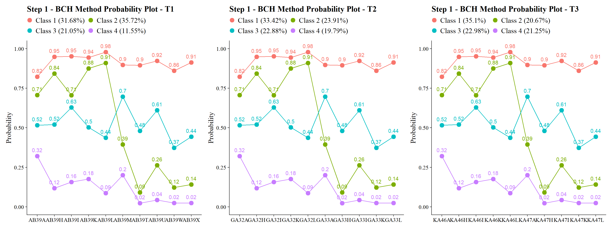
28.19.2 BCH Step 2: Extract BCH weights
bch_savedata <- as.data.frame(inv_bch$savedata)
#summary(bch_savedata)28.19.3 BCH Step 3a: Estimate the Unconditional LTA Model Using BCH Weights
step3_bch <- mplusObject(
TITLE = "Step 3 - BCH Method",
VARIABLE =
"usevar = BCHW1-BCHW64;
training = BCHW1-BCHW64(bch);
classes = c1(4) c2(4) c3(4);" ,
ANALYSIS =
"type = mixture;
starts = 0;",
MODEL = glue(
"%overall%
c2 ON c1;
c3 ON c2;"),
usevariables = colnames(bch_savedata),
rdata = bch_savedata)
step3_fit_bch <- mplusModeler(step3_bch,
dataout=here("three_lta", "phase_3", "step_3a_bch", "step3.dat"),
modelout=here("three_lta", "phase_3", "step_3a_bch", "unconditional_bch.inp"),
check=TRUE, run = TRUE, hashfilename = FALSE)28.19.3.1 Plotting BCH Transition Probabilities
source(here("functions","plot_transition.R"))
lta_model <- readModels(here("three_lta", "phase_3", "step_3a_bch", "unconditional_bch.out"))
plot_transition(
model_name = lta_model,
facet_labels = c(`1` = "Very Positive", `2` = "Qualified Positive", `3` = "Neutral", `4` = "Less Positive"),
timepoint_labels = c(`1` = "Grade 7", `2` = "Grade 10", `3` = "Grade 12"),
class_labels = c(`1` = "Very Positive", `2` = "Qualified Positive", `3` = "Neutral", `4` = "Less Positive")
) +
labs(title = "Unconditional LTA (BCH Method)")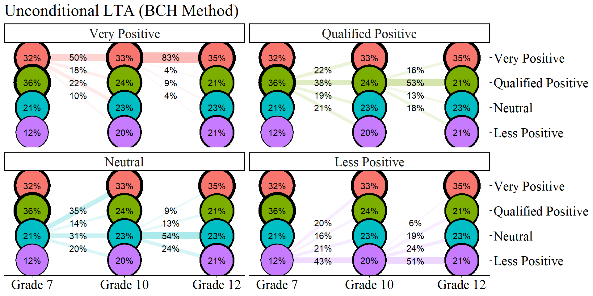
ggsave(here("figures", "unconditional_lta_bch.jpeg"), dpi="retina", height = 6, width = 10, bg = "white", units="in")28.19.4 BCH Step 3b: Estimate the Covariate-Adjusted LTA Model Using BCH Weights
step3_bch <- mplusObject(
TITLE = "Step 3 - BCH Method",
VARIABLE =
"usevar = BCHW1-BCHW64 MINORITY, FEMALE;
training = BCHW1-BCHW64(bch);
classes = c1(4) c2(4) c3(4);" ,
ANALYSIS =
"estimator = mlr;
type = mixture;
starts = 0;",
MODEL =
glue(
" %OVERALL%
c1 ON MINORITY Female;
c2 ON c1 MINORITY Female;
c3 ON c2 MINORITY Female;"),
usevariables = colnames(bch_savedata),
rdata = bch_savedata)
step3_fit_bch <- mplusModeler(step3_bch,
dataout=here("three_lta", "phase_3", "step_3b_bch", "step3.dat"),
modelout=here("three_lta", "phase_3", "step_3b_bch", "bch_covariates.inp"),
check=TRUE, run = TRUE, hashfilename = FALSE)28.19.4.1 Covariate Table: BCH Method
lta_cov_model <- readModels(here("three_lta", "phase_3", "step_3b_bch", "bch_covariates.out"))
# REFERENCE CLASS 4
cov <- as.data.frame(lta_cov_model[["parameters"]][["unstandardized"]]) %>%
filter(param %in% c("MINORITY", "FEMALE")) %>%
mutate(param = case_when(
param == "FEMALE" ~ "Gender",
param == "MINORITY" ~ "URM"),
se = paste0("(", format(round(se,2), nsmall =2), ")")) %>%
separate(paramHeader, into = c("Time", "Class"), sep = "#") %>%
mutate(Class = case_when(
Class == "1.ON" ~ "Very Positive",
Class == "2.ON" ~ "Qualified Positive",
Class == "3.ON" ~ "Neutral"),
Time = case_when(
Time == "C1" ~ "7th Grade (T1)",
Time == "C2" ~ "10th Grade (T2)",
Time == "C3" ~ "12th Grade (T3)",
)
) %>%
unite(estimate, est, se, sep = " ") %>%
select(Time:pval, -est_se) %>%
mutate(pval = ifelse(pval<0.001, paste0("<.001*"),
ifelse(pval<0.05, paste0(scales::number(pval, accuracy = .001), "*"),
scales::number(pval, accuracy = .001))))
# Create table
cov_m1 <- cov %>%
group_by(param, Class) %>%
gt() %>%
tab_header(
title = "Relations Between the Covariates and Latent Class (BCH Method)") %>%
tab_footnote(
footnote = md(
"Reference Group: Less Positive"
),
locations = cells_title()
) %>%
cols_label(
param = md("Covariate"),
estimate = md("Estimate (*se*)"),
pval = md("*p*-value")) %>%
sub_missing(1:3,
missing_text = "") %>%
sub_values(values = c(999.000), replacement = "-") %>%
cols_align(align = "center") %>%
opt_align_table_header(align = "left") %>%
gt::tab_options(table.font.names = "serif")
cov_m1| Relations Between the Covariates and Latent Class (BCH Method)1 | ||
| Time | Estimate (se) | p-value |
|---|---|---|
| URM - Very Positive | ||
| 7th Grade (T1) | 0.225 (0.27) | 0.406 |
| 10th Grade (T2) | 0.442 (0.27) | 0.100 |
| 12th Grade (T3) | 0.809 (0.60) | 0.175 |
| Gender - Very Positive | ||
| 7th Grade (T1) | -0.655 (0.19) | 0.001* |
| 10th Grade (T2) | -0.091 (0.20) | 0.641 |
| 12th Grade (T3) | 0.338 (0.45) | 0.457 |
| URM - Qualified Positive | ||
| 7th Grade (T1) | 0.096 (0.28) | 0.736 |
| 10th Grade (T2) | 0.444 (0.27) | 0.105 |
| 12th Grade (T3) | 1.099 (0.40) | 0.006* |
| Gender - Qualified Positive | ||
| 7th Grade (T1) | 0.1 (0.20) | 0.621 |
| 10th Grade (T2) | 0.411 (0.20) | 0.039* |
| 12th Grade (T3) | 0.623 (0.27) | 0.022* |
| URM - Neutral | ||
| 7th Grade (T1) | 0.515 (0.32) | 0.103 |
| 10th Grade (T2) | 0.145 (0.31) | 0.640 |
| 12th Grade (T3) | 0.822 (0.40) | 0.039* |
| Gender - Neutral | ||
| 7th Grade (T1) | -0.431 (0.24) | 0.069 |
| 10th Grade (T2) | 0.062 (0.21) | 0.771 |
| 12th Grade (T3) | 0.372 (0.26) | 0.152 |
| 1 Reference Group: Less Positive | ||